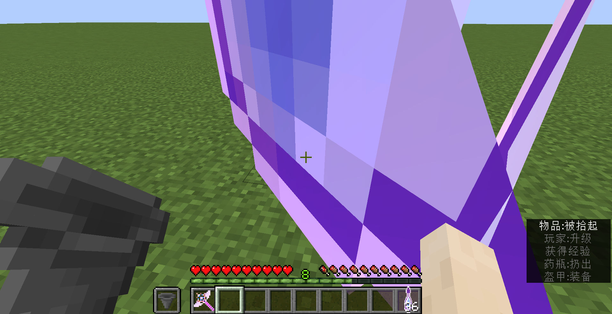
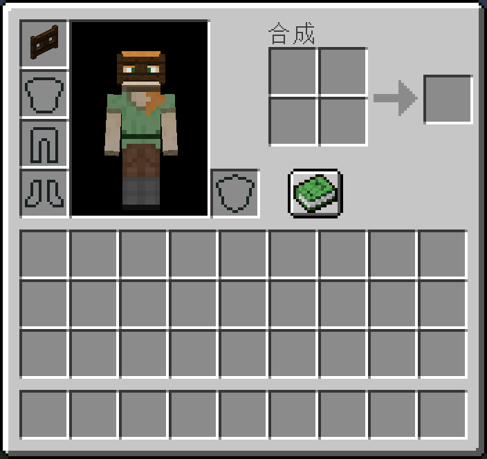
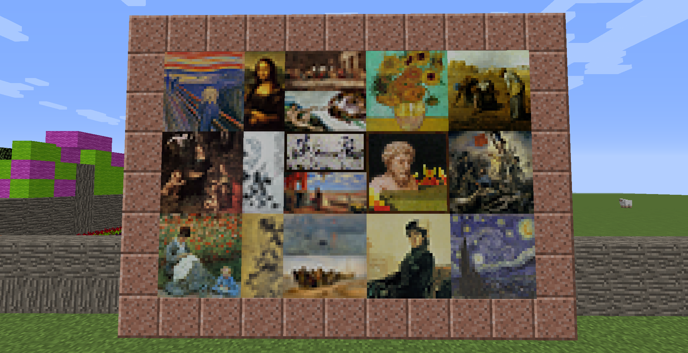
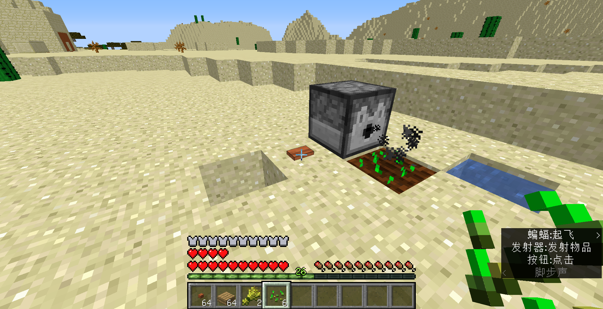
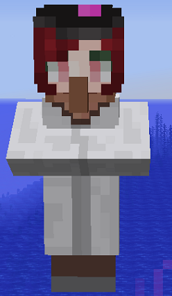

简介
🎉欢迎来到《更多的合成》系列模组百科！
什么是原版模组？原版模组一般是指在不修改Minecraft游戏本体的前提下，通过命令方块、ooc或数据包等方式，而非forge或liteloader等api来对游戏的可玩性做出修改。
什么是《更多的合成》？《更多的合成》是国内论坛最大的原版模组，目前已更新至1.8.1 m09d02，支持Minecraft Java版 1.13.1。本次更新为元素更新，内容包括：
- 17种实用性的工具，帮你更好地改造大自然，更有超强压缩能力的压缩器，可压缩上亿个同类物品；
- 5种不同的傀儡，替你钓鱼、种菜、挖矿、杀怪、喂食；
- 20种全新的农作物和崭新的杂交体系，帮你获取各种稀有物品；
- 4种不同的法杖，可用来执行各种仪式，以强化你的盔甲、武器、工具；
- 100种可选择的称号，现在仅售1绿宝石；
- 15幅油画、2幅水墨画、8种春联和横幅、混合台阶、竖台阶、书架箱，用它们来装点你的家吧；
- 10种全新的村民职业，让村民和交易更有价值；
- 原谅帽、雪地靴、黑框眼镜，超多实用有趣的装饰品；
- 集熔炼、磨粉、造石、造冰、酿药于一体的机器，采用附魔之瓶作为能源；
- 一键连锁挖掘，让你方便地挖矿、砍树、收菜；
- 永久生效的状态效果，让你从不停地喝药中解脱出来；
- 主动攻击玩家的动物，小心！
- 地牢不方便，那就把刷怪箱搬回家；
- 数种全新的建筑物和宝箱，探索自有它的价值；
- 可合成的怪物蛋、龙蛋、粘土、红沙、锁链盔甲；
- 独特的空岛系统，让你的空岛不再单调。
📦 如何开始
本页面所列内容为1.8版本。不建议玩家使用旧版本，同时新版本放出后，旧版本一律不再更新和修复bug。 本页面内容亦会同步更新至mcbbs中文论坛页面。
| 支持的minecraft版本 | 模组版本及下载链接 |
|---|---|
| Minecraft Java版 1.13.1 | craftingpp-1.8.1-m09d02 | 备用链接 |
| Minecraft Java版 1.13.1 | craftingpp-1.8 | 备用链接 |
| Minecraft Java版 1.12 | craftingpp-1.7.4 |
| Minecraft Java版 1.12 pre | craftingpp-1.6.1 |
| Minecraft Java版 1.11 | craftingpp-1.5 |
| Minecraft Java版 1.11 | craftingpp-1.4 |
| Minecraft Java版 1.11 | craftingpp-1.3 |
| Minecraft Java版 1.11 | SpawnEggPressureStoneMod-1.2 |
| Minecraft Java版 1.10 | SpawnEggPressureStoneMod-1.1 |
| Minecraft Java版 1.10 | SpawnEggPressureStoneMod-1.0 |
下载后，将解压缩后的datapacks文件夹和resources.zip放入.minecraft/saves/世界名文件夹，然后进入游戏并按下F3+T或退出世界重进即可。
涉及模组特有物品均需使用 合成器来合成。
合成器来合成。
空岛模块默认不开启，玩家可由自定义超平坦如minecraft:air;minecraft:mountains;并重复上述操作安装。
模组部分参数可通过修改配置文件datapacks/craftingpp/data/cpp/functions/config.mcfunction修改。
模组大部分文字支持英文、简体中文、繁体中文。如有任何意见建议，欢迎在论坛回复、发起issue或私信我，请在反馈时提供游戏版本和模组版本。
转载本文需遵守CC BY-NC-ND 2.5 CN 许可协议——列出作者(ruhuasiyu@mcbbs)、来源、原始下载链接以及相同的许可协议。模组代码使用需遵守GNU GENERAL PUBLIC LICENSE v3.0协议。请勿转载至网盘或文件存储平台，通讯类工具允许下载后分享。公益服务器可直接使用；非公益服务器需先联系我。
💖 支持我们
如果您想要对我们进行支持，可使用爱发电、支付宝、微信、bilibili充电对我们进行赞助。您的赞助对我们至关重要，非常感谢您的支持！
{kind=link}
{kind=link}
👷 制作者名单
数据包设计：ruhuasiyu
资源包设计：ruhuasiyu 天狼星black 折君 MC先生(繁体中文)
指令参考：pineapple_ 贰逼 ECS pca 玄素 chyx zzzz_ustc 乙烯_中国 switefaster 折君 ⊙v⊙ Herobrinexia
平台支持：mcbbs中文论坛 MCMOD百科 CBL小组 TCP小组 CBV小组 MAG小组
服务器支持：HerobrineXia
经费支持：墨鱼 ustc_zzzz 落天望月 switefaster chyx SPGoding
感谢以上所有玩家，特别感谢对我们给予经费支持的玩家！
🔧 技术性
本系列模组分为以下5个部分，专业玩家可根据自身需要选择相应的内容。| 模组名称 | 数据包名称 | 内容 |
|---|---|---|
| 合成器 | crafting_machine | 合成器与机械处理(更多的合成前置) |
| 更多的合成 | craftingpp | 生物修改|元素之力|机器|工具|饮食|熔炼|酿造|农业|仪式|装饰|原版 |
| 更多的交易 | tradepp | 村民交易 |
| 更多实用功能 | utilitypp | 自动种植|炼药锅|随机方块|箱子整理|混合台阶|竖台阶 |
| 空域开端 | block_sky_domain | 空岛基础进展 |
索引
自然生成
羊毛树 (Wool Tree)
天然生成在主世界的任意有草方块的群系的地表。羊毛树的形状与桦树相同，树干为桦木，树叶为16种羊毛的任意组合。
爬行者地牢 (Creeper Dungeon)
天然生成在主世界的地下y=20附近。与其它地牢类似，爬行者地牢是一个由圆石和苔石构成的小房间，包含苦力怕刷怪箱和地牢宝箱。
与通常地牢不同，爬行者地牢是全封闭的。注意爬行者的爆炸可能会破坏刷怪箱。
附魔室 (Enchanting Room)
天然生成在主世界的陆地地表。附魔室是一个由黑曜石、荧石、空书架、淡蓝色玻璃、地狱砖、附魔台构成的小房间，空书架内含有纸、书、附魔书、指南针或空地图。
图腾柱 (Totem Pillar)
天然生成在主世界的陆地地表。图腾柱是一根由各种石砖构成的柱子，中间包含包含矿石、熔岩和宝箱。宝箱含泥土之魂/火焰之星/山脉之肢/附魔金苹果/附魔铁锭/附魔金锭/肉松面包/拔丝苹果/煤炭/骨头/火药/腐肉/线。


实体和战利品
怪物加强
- 僵尸：有更高的几率生成时身穿盔甲、手持武器。
- 骷髅：有更高的几率生成时身穿盔甲、射出药箭。
- 爬行者：爆炸前的引线时间更短。高压爬行者可天然生成，几率约3.125%。
黑暗动物
生成动物时有3.125%几率生成。黑暗动物顶部会冒黑烟，会主攻靠近并攻击玩家(搜寻范围16米)。黑暗动物有几率掉落黑暗碎片。
- 黑暗牛：对玩家造成凋零和饥饿效果，掉落皮革和腐肉。
- 黑暗哞菇：对玩家造成凋零和饥饿效果，掉落红色蘑菇和腐肉。
- 黑暗羊：对玩家造成凋零和缓慢效果，掉落黑色羊毛和骨头。
- 黑暗猪：靠近后直接爆炸，掉落腐肉和火药。
- 黑暗鸡：对玩家造成凋零和中毒效果，掉落羽毛和线。
- 黑暗兔子：对玩家造成凋零II效果，掉落兔子皮和骨头。
村民
村民可被手持绿宝石块的玩家吸引(搜寻范围10米)，村民被玩家杀死时掉落3点经验值。
村民被玩家吸引不会自动爬升方块，使用台阶或楼梯来辅助之。


战利品
生物死亡时若着火不会掉落羽毛。表格中左上角*表示易和原版混淆的物品。
若一种生物可掉落多种稀有掉落物，则掉落几率会被平均分配。
| 掉落物 | 掉落几率/数量 | 来源 | |
|---|---|---|---|
| 天空之翼 | 2.5%+1%×抢夺等级 | 蝙蝠/烈焰人/鸡/恶魂/鹦鹉/幻翼/恼鬼，着火时不会掉落。 | |
| 海洋之心 | 溺尸/远古守卫者/守卫者/鱿鱼/海龟/海豚 | ||
| 山脉之肢 | 牛/驴/马/骡/哞菇/猪/北极熊/兔子/羊 | ||
| 泥土之魂 | 僵尸/僵尸村民/尸壳/骷髅/流髑/凋灵骷髅/骷髅马/僵尸猪人/幻翼/溺尸 | ||
| 大地之证 | 僵尸村民/村民/卫道士/唤魔者 | ||
| 火焰之星 | 爬行者/烈焰人/恶魂/岩浆怪 | ||
| 生命之灵 | 末影人/末影螨/潜影贝 | ||
| 生物头颅 | 2.5%+1%×抢夺等级 | 牛/猪/羊/哞菇/兔子/鱿鱼/马/驴/骡/羊驼/北极熊/豹猫/狼/鱼 僵尸/僵尸村民/骷髅/爬行者/女巫/蜘蛛/洞穴蜘蛛/史莱姆 尸壳/流髑/骷髅马/守卫者/远古守卫者/村民/卫道士/恼鬼 铁傀儡/雪傀儡/僵尸猪人/烈焰人/恶魂/岩浆怪/末影人/末影螨 | |
| 龙首 | 1 | 末影龙 | |
| 红色蘑菇 | 0~(2+抢夺等级) | 哞菇，同时掉落皮革修改为0~(1+抢夺等级) | |
| * | 生鹦鹉肉 | 0~(2+抢夺等级) | 鹦鹉，若着火则掉落熟肉 |
| * | 马肉 驴肉 骡肉 羊驼肉 |
1~(3+抢夺等级) | 马，若着火则掉落熟肉 驴，若着火则掉落熟肉 骡，若着火则掉落熟肉 羊驼，若着火则掉落熟肉 |
| * | 熊肉 | 1~(4+抢夺等级) | 北极熊，同时不再掉落鱼，若着火则掉落熟肉 |
| 生猪排 | 0~(1+抢夺等级) | 僵尸猪人 | |
| 绿宝石 | 1~(2+抢夺等级) | 村民 | |
| 经验值 | 3 | 村民 | |
| 钓鱼 | 0.068%×(1+40%*(幸运+海之眷顾)) | 湿海绵 | |
| 0.034%×(1+40%*(幸运+海之眷顾)) | 鱼头/鲑鱼头/热带鱼头/河豚头/海洋之心 | ||
| 0.97%×(1-20%*(幸运+海之眷顾)) | 火药/海晶碎片 | ||

机器和插件
合成器 (Crafting Machine)
合成器可使用或者不使用工具进行开采，但用斧是最快的。
主手持有右键放置。放置后右键打开并将材料放入左侧3×3的合成方格，若右侧为空，则会自动合成出产物。关闭后，界面里的东西会保留，可以使用漏斗输入。
强行将物品放入背景会导致停机。
| 产物 | 材料 | 合成配方 |
|---|---|---|
| 合成器 | 附魔之瓶+工作台 |
多功能一体机 (All-in-one Machine)
| 产物 | 材料 | 合成配方 |
|---|---|---|
| 多功能一体机 | 附魔铁锭+附魔金锭+熔炉+箱子+泥土之魂 | * * * * * * |

主手持有右键放置。多功能一体机可使用或者不使用工具进行开采，但用斧是最快的。关闭后，界面里的东西会保留，可以使用漏斗输入。
上方若有固体方块阻挡将无法打开。默认情形下，多功能一体机只能使用常压常温模式。主手持有相应的插件右键即可升级，解锁相应模式，包括：低温插件、低压插件、高温插件、高压插件。
多功能一体机包括上方两个输入槽，下方两个输出槽。右上方为附魔之瓶槽位和经验槽。左侧三个槽位控制压力、温度和输出方向，按Q或Shift+左键切换模式。若输出方向有箱子/潜影箱/陷阱箱则会自动输出到箱子内。多功能一体机可以存储至多48点经验，当经验空缺部分达到附魔之瓶经验存储量时，会自动消耗附魔之瓶来装填，将附魔之瓶放入右上方槽位即可。
强行将物品放入背景会导致停机。
高温高压
矿石的倍率在模组加载时被确定，玩家可自行测量参数。产出1.6~3.5个对应矿物，红石×5，青金石×6。| 输入 | 输出 | 消耗经验 | 耗时 | |
|---|---|---|---|---|
| 任意两种矿石 | 1.6~3.5对应矿物 | 4 | 10 | |
高温常压
| 输入 | 输出 | 消耗经验 | 耗时 | ||
|---|---|---|---|---|---|
| 铁粉 | 沙子/红沙 | 2 铁锭 | 20% 煤渣 | 1 | 2.5 |
| 金粉 | 沙子/红沙 | 2 金锭 | 20% 煤渣 | 1 | 2.5 |
| 碳粉 | 沙子/红沙 | 2 煤炭 | 20% 煤渣 | 1 | 2.5 |
| 钻石粉 | 沙子/红沙 | 2 钻石 | 20% 煤渣 | 1 | 2.5 |
| 绿宝石粉 | 沙子/红沙 | 2 绿宝石 | 20% 煤渣 | 1 | 2.5 |
| 石英粉 | 沙子/红沙 | 2 石英 | 20% 煤渣 | 1 | 2.5 |
| 硅粉 | 沙子/红沙 | 硅板 | 20% 煤渣 | 4 | 10 |
| 稀土粉 | 沙子/红沙 | 稀土玻璃 | 20% 煤渣 | 4 | 10 |
| 钢粉 | 沙子/红沙 | 钢化玻璃 | 20% 煤渣 | 4 | 10 |
| 玻璃瓶 | 沙子/红沙 | 盐瓶 | - | 4 | 10 |
高温低压
| 输入 | 输出 | 消耗经验 | 耗时 | ||
|---|---|---|---|---|---|
| 酸水 | 地狱疣 | 生物酸 | - | 4 | 10 |
| 碱水 | 地狱疣 | 生物碱 | - | 4 | 10 |
| 石英粉 | 燧石 | 粗硅 | - | 4 | 10 |
| 玻璃瓶 | 活塞 | 空气瓶 | - | 4 | 10 |
| 粗硅 | 空气瓶 | 硅粉 | - | 4 | 10 |
| 粘土块 | 盐瓶 | 稀土盐 | - | 4 | 10 |
| 稀土盐 | 生物碱 | 碱性稀土 | - | 4 | 10 |
| 碱性稀土 | 生物酸 | 稀土粉 | - | 4 | 10 |
| 生物碱 | 肥料 | 氨制冷剂 | 煤渣 | 4 | 10 |
常温高压
| 输入 | 输出 | 消耗经验 | 耗时 | ||
|---|---|---|---|---|---|
| 铁矿石 | 燧石 | 铁粉 | 10% 金粉 | 4 | 10 |
| 金矿石 | 燧石 | 金粉 | 10% 铁粉 | 4 | 10 |
| 煤矿石 | 燧石 | 碳粉 | 2% 钻石粉 | 4 | 10 |
| 绿宝石矿石 | 燧石 | 绿宝石粉 | 10% 钻石粉 | 4 | 10 |
| 钻石矿石 | 燧石 | 钻石粉 | 10% 碳粉 | 4 | 10 |
| 石英矿石 | 燧石 | 石英粉 | 10% 荧石粉 | 4 | 10 |
| 红石矿石 | 燧石 | 红石块 | 2~4 青金石 | 4 | 10 |
| 青金石矿石 | 燧石 | 15 青金石 | 2~4 红石 | 4 | 10 |
| 2 铁锭 | 燧石 | 铁粉 | - | 1 | 2.5 |
| 2 金锭 | 燧石 | 金粉 | - | 1 | 2.5 |
| 2 煤炭 | 燧石 | 碳粉 | - | 1 | 2.5 |
| 2 木炭 | 燧石 | 碳粉 | - | 1 | 2.5 |
| 2 煤渣 | 燧石 | 碳粉 | - | 1 | 2.5 |
| 2 绿宝石 | 燧石 | 绿宝石粉 | - | 1 | 2.5 |
| 2 钻石 | 燧石 | 钻石粉 | - | 1 | 2.5 |
| 2 石英 | 燧石 | 石英粉 | - | 1 | 2.5 |
| 2 花岗岩 | 燧石 | 石英粉 | - | 1 | 2.5 |
| 2 安山岩 | 燧石 | 石英粉 | - | 1 | 2.5 |
| 2 闪长岩 | 燧石 | 石英粉 | - | 1 | 2.5 |
| 海晶石 | 燧石 | 3 海晶碎片 | 海晶砂粒 | 1 | 2.5 |
| 海晶石砖 | 燧石 | 6 海晶碎片 | 2 海晶砂粒 | 1 | 2.5 |
| 暗海晶石 | 燧石 | 6 海晶碎片 | 2 海晶砂粒 | 1 | 2.5 |
| 羊毛 | 燧石 | 4 线 | 5% 染料 | 1 | 2.5 |
| 粘土块 | 燧石 | 粘液球 | - | 1 | 2.5 |
| 4 圆石 | 燧石 | 4 沙子 | 砂砾 | 1 | 1 |
| 4 石头 | 燧石 | 4 砂砾 | 沙子 | 1 | 1 |
| 4 砂砾 | 燧石 | 4 燧石 | 沙子 | 1 | 1 |
| 4 荧石粉 | 压缩器 (不消耗) | 荧石块 | - | 0 | 0 |
| 4 雪球 | 压缩器 (不消耗) | 雪块 | - | 0 | 0 |
| 4 粘土球 | 压缩器 (不消耗) | 粘土块 | - | 0 | 0 |
| 4 月之碎片 | 压缩器 (不消耗) | 日之碎片 | - | 0 | 0 |
| 9 日之碎片 | 压缩器 (不消耗) | 下界之星 | - | 0 | 0 |
| 9 铁粒 | 压缩器 (不消耗) | 铁锭 | - | 0 | 0 |
| 9 金粒 | 压缩器 (不消耗) | 金锭 | - | 0 | 0 |
| 9 矿物 | 压缩器 (不消耗) | 矿物块 | - | 0 | 0 |
| 9 兔子皮 | 压缩器 (不消耗) | 皮革 | - | 0 | 0 |
| 9 西瓜片 | 压缩器 (不消耗) | 西瓜 | - | 0 | 0 |
| 9 地狱疣 | 压缩器 (不消耗) | 地狱疣块 | - | 0 | 0 |
| 9 线 | 压缩器 (不消耗) | 蜘蛛网 | - | 0 | 0 |
| 9 小麦 | 压缩器 (不消耗) | 干草块 | - | 0 | 0 |
| 9 干海带 | 压缩器 (不消耗) | 干海带块 | - | 0 | 0 |
| 9 粘液球 | 压缩器 (不消耗) | 粘液块 | - | 0 | 0 |
常温常压
| 输入 | 输出 | 消耗经验 | 耗时 | ||
|---|---|---|---|---|---|
| 小麦种子 | 肥料 | 2 小麦 | 0~3 小麦种子 | 2 | 2 |
| 甜菜种子 | 肥料 | 2 甜菜根 | 0~3 甜菜种子 | 2 | 2 |
| 胡萝卜 | 肥料 | 6 胡萝卜 | - | 2 | 2 |
| 马铃薯 | 肥料 | 6 马铃薯 | - | 2 | 2 |
| 南瓜种子 | 肥料 | 2 南瓜 | - | 2 | 2 |
| 西瓜种子 | 肥料 | 2 西瓜 | - | 2 | 2 |
| 甘蔗 | 肥料 | 4 甘蔗 | - | 2 | 2 |
| 海带 | 肥料 | 4 海带 | - | 2 | 2 |
| 仙人掌 | 肥料 | 4 仙人掌 | - | 2 | 2 |
| 藤蔓 | 肥料 | 4 藤蔓 | - | 2 | 2 |
| 可可豆 | 肥料 | 4 可可豆 | - | 2 | 2 |
| 蘑菇 | 肥料 | 4 蘑菇 | - | 2 | 2 |
| 地狱疣 | 肥料 | 4 地狱疣 | - | 2 | 2 |
| 睡莲 | 肥料 | 4 睡莲 | - | 2 | 2 |
| 紫颂花 | 肥料 | 2 紫颂果 | 0~3 紫颂花 | 2 | 2 |
| 花 | 肥料 | 4 花 | - | 2 | 2 |
| 树苗 | 肥料 | 4 木头 | 0~3 树苗 | 2 | 2 |
| 水果树树苗 | 肥料 | 水果 | 0~3 水果树树苗 | 2 | 2 |
| 矿石树树苗 | 肥料 | 矿石 | 0~3 矿石树树苗 | 2 | 2 |
| 羊毛树树苗 | 肥料 | 羊毛 | 0~3 羊毛树树苗 | 2 | 2 |
常温低压
| 输入 | 输出 | 消耗经验 | 耗时 | |
|---|---|---|---|---|
| 幻翼膜 | 粗制的药水 | 缓降药水 (缓降 8:00) | 4 | 10 |
| 金胡萝卜 | 粗制的药水 | 夜视药水 (夜视 16:00) | 4 | 10 |
| 岩浆膏 | 粗制的药水 | 抗火药水 (防火 16:00) | 4 | 10 |
| 河豚 | 粗制的药水 | 水肺药水 (水下呼吸 16:00) | 4 | 10 |
| 发酵蛛眼 | 夜视药水 (夜视 16:00) | 隐身药水 (隐身 16:00) | 4 | 15 |
| 兔子脚 | 粗制的药水 | 跳跃药水 (跳跃提升II 8:00) | 4 | 10 |
| 糖 | 粗制的药水 | 迅捷药水 (速度II 8:00) | 4 | 10 |
| 烈焰粉 | 粗制的药水 | 力量药水 (力量II 8:00) | 4 | 10 |
| 附魔钻石 | 粗制的药水 | 抗性药水 (抗性提升II 8:00) | 4 | 10 |
| 附魔金锭 | 粗制的药水 | 急迫药水 (急迫II 8:00) | 4 | 10 |
| 附魔铁锭 | 粗制的药水 | 连环药水 (连锁 8:00) | 4 | 10 |
| 恶魂之泪 | 粗制的药水 | 再生药水 (生命恢复II 4:00) | 4 | 10 |
| 鹦鹉螺 | 粗制的药水 | 潮汐药水 (潮涌能量 8:00) | 4 | 10 |
| 闪烁的西瓜 | 粗制的药水 | 治疗药水 (瞬间治疗III) | 4 | 10 |
| 附魔金苹果 | 粗制的药水 | 无敌药水 (生命恢复III 0:30 抗性提升V 3:00) | 4 | 10 |
低温高压
| 输入 | 输出 | 消耗经验 | 耗时 | ||
|---|---|---|---|---|---|
| 水瓶 | 水果 | 冷饮 | - | 2 | 5 |
| 水瓶 | 氨制冷剂 | 冰 | 氨制冷剂 | 1 | 1 |
| 绿色水之力 (不消耗) | 氨制冷剂 | 冰 | 氨制冷剂 | 1 | 1 |
低温常压
| 输入 | 输出 | 消耗经验 | 耗时 | ||
|---|---|---|---|---|---|
| 熔岩桶 (不消耗) | 圆石插件 (不消耗) | 圆石 | - | 1 | 1 |
| 熔岩桶 (不消耗) | 石头插件 (不消耗) | 石头 | - | 1 | 1 |
| 熔岩桶 | 黑曜石插件 (不消耗) | 黑曜石 | 桶 | 4 | 10 |
低温低压
| 输入 | 输出 | 消耗经验 | 耗时 | ||
|---|---|---|---|---|---|
| 水瓶 | 氨制冷剂 | 雪块 | 氨制冷剂 | 1 | 1 |
| 绿色水之力 (不消耗) | 氨制冷剂 | 雪块 | 氨制冷剂 | 1 | 1 |
交易机 (Trade Machine)
| 产物 | 材料 | 合成配方 |
|---|---|---|
| 交易机 | 附魔铁锭+傀儡+箱子+绿宝石+大地之证 | * * * * |

主手持有右键放置。交易机可使用或者不使用工具进行开采，但用斧是最快的。关闭后，界面里的东西会保留，可以使用漏斗输入。
上方若有固体方块阻挡将无法打开。交易机包括左侧1个输入槽，右侧2个输出槽。左侧槽位控制输出方向，按Q或Shift+左键切换模式，若输出方向有箱子/潜影箱/陷阱箱则会自动输出到箱子内。
每次交易获得7点经验值，若输入绿宝石则额外产生7点。当存储的经验值达到附魔之瓶的存储量时，会转化为附魔之瓶输出。
| 输入槽 | 输出 |
|---|---|
| 钻石 | 4 绿宝石 |
| 附魔书 | 绿宝石 |
| 指南针 | 绿宝石 |
| 2 成书 | 绿宝石 |
| 8 南瓜/西瓜/书/金锭/铁锭/皮革 | 绿宝石 |
| 16 小麦/马铃薯/胡萝卜/海草/海带/紫颂果 16 蜘蛛眼/末影珍珠/生猪排/生鸡肉/地狱疣 16 线/煤炭/白色羊毛/青金石/荧石粉/红石 | 绿宝石 |
| 32 纸/木炭/玫瑰红/墨囊 | 绿宝石 |
| 36 腐肉/火药/骨粉/烈焰粉/粘液球/箭/海晶砂粒 | 绿宝石 |
| 绿宝石 | +7经验值 |
生物投影仪 (Mob Projector)
| 产物 | 材料 | 合成配方 |
|---|---|---|
| 生物投影仪 | 附魔铁锭+刷怪箱+箱子+附魔钻石+生命之灵 | * * * * * * |

主手持有右键放置。生物投影仪可使用或者不使用工具进行开采，但用斧是最快的。关闭后，界面里的东西会保留，可以使用漏斗输入。
上方若有固体方块阻挡将无法打开。生物投影仪包括4个输入槽，上方为鸡蛋槽，右上方为附魔之瓶槽。当材料合适时，每隔10秒会在下方两米处生成相应生物。
| 输入材料 | 所需经验值 | 生成生物 | |
|---|---|---|---|
| 羊毛 | 小麦 | 4 | 羊 |
| 皮革 | 小麦 | 牛 | |
| 猪排 | 胡萝卜/土豆 | 猪 | |
| 羽毛 | 种子 | 鸡 | |
| 兔子皮 | 胡萝卜/蒲公英 | 兔子 | |
| 羽毛 | 木炭 | 蝙蝠 | |
| 墨囊 | 鳕鱼/鲑鱼 | 鱿鱼 | |
| 火药 | 沙子/红沙 | 爬行者 | |
| 腐肉 | 铁粒 | 僵尸(68.75%)/僵尸村民(12.5%)/尸壳(12.5%)/溺尸(6.25%) | |
| 骨头 | 箭 | 骷髅(93.75%)/流浪者(6.25%) | |
| 线 | 蜘蛛眼 | 蜘蛛(93.75%)/洞穴蜘蛛(6.25%) | |
| 石砖 | 铁粒 | 蠹虫 | |
| 红石 | 荧石粉 | 8 | 女巫 |
| 粘液球 | 粘土球 | 史莱姆 | |
| 幻翼膜 | 羽毛 | 幻翼 | |
| 冰 | 鳕鱼/鲑鱼 | 北极熊 | |
| 金粒 | 腐肉 | 僵尸猪人 | |
| 恶魂之泪 | 火药 | 恶魂 | |
| 岩浆膏 | 地狱砖 | 岩浆怪 | |
| 烈焰粉 | 地狱砖 | 烈焰人 | |
| 末影珍珠 | 末地石 | 末影人 | |
| 末地石 | 金粒 | 末影螨 | |
| 绿宝石 | 书 | 村民 | |
| 绿宝石 | 铁块 | 32 | 卫道士 |
| 绿宝石 | 金块 | 唤魔者 | |
| 鳕鱼/鲑鱼 | 守卫者(93.75%)/远古守卫者(6.25%) | ||
| 紫颂果 | 末影珍珠 | 潜影贝 | |
| 骨头 | 煤炭块 | 凋灵骷髅 | |
| 骨头 | 骷髅头颅 | 狼 | |
| 鳕鱼/鲑鱼 | 骷髅头颅 | 豹猫 | |
| 皮革 | 骷髅头颅 | 马 | |
| 箱子 | 骷髅头颅 | 驴 | |
| 任意地毯 | 骷髅头颅 | 羊驼 | |
| 羽毛 | 骷髅头颅 | 鹦鹉 | |
| 海草 | 骷髅头颅 | 海龟 | |
空白插件 (Empty Plugin)
| 产物 | 材料 | 合成配方 |
|---|---|---|
| 空白插件 | 纸+红石 |
空白插件可用于合成低温插件、低压插件、高温插件、高压插件、圆石插件、石头插件、黑曜石插件。
低温插件 (Low Temperature Plugin)
主手持有右击多功能一体机即可安装。
| 产物 | 材料 | 合成配方 |
|---|---|---|
| 低温插件 | 附魔之瓶+附魔钻石+附魔金锭+空白插件+雪块+海洋之心 | * * * |
低压插件 (Low Pressure Plugin)
主手持有右击多功能一体机即可安装。
| 产物 | 材料 | 合成配方 |
|---|---|---|
| 低压插件 | 附魔之瓶+附魔钻石+附魔金锭+空白插件+玻璃+飞翔之翼 | * * * |
高温插件 (High Temperature Plugin)
主手持有右击多功能一体机即可安装。
| 产物 | 材料 | 合成配方 |
|---|---|---|
| 高温插件 | 附魔之瓶+附魔钻石+附魔金锭+空白插件+熔岩桶+火焰之星 | * * * |
高压插件 (High Pressure Plugin)
主手持有右击多功能一体机即可安装。
| 产物 | 材料 | 合成配方 |
|---|---|---|
| 高压插件 | 附魔之瓶+附魔钻石+附魔金锭+空白插件+活塞+山脉之肢 | * * * |
圆石插件 (Cobblestone Plugin)
圆石插件用于多功能一体机常压模式下制造圆石。主手持有右击多功能一体机即可安装。
| 产物 | 材料 | 合成配方 |
|---|---|---|
| 圆石插件 | 附魔之瓶+附魔钻石+附魔金锭+空白插件+附魔铁锭+石镐 | * * * * * |
石头插件 (Stone Plugin)
石头插件用于多功能一体机常压模式下制造石头。主手持有右击多功能一体机即可安装。
| 产物 | 材料 | 合成配方 |
|---|---|---|
| 石头插件 | 附魔之瓶+附魔钻石+附魔金锭+空白插件+附魔铁锭+铁镐 | * * * * * |
黑曜石插件 (Obsidian Plugin)
黑曜石插件用于多功能一体机常压模式下制造黑曜石。主手持有右击多功能一体机即可安装。
| 产物 | 材料 | 合成配方 |
|---|---|---|
| 黑曜石插件 | 附魔之瓶+附魔钻石+附魔金锭+空白插件+附魔铁锭+金镐 | * * * * * |
掉落物
稀有掉落物
大部分生物在被玩家杀死时，有2.5%+抢夺等级×1%的几率掉落与其对应的稀有物品。对应关系如下：
- 天空之翼 (Wing of Sky)：蝙蝠、恶魂、幻翼、鸡、烈焰人、恼鬼、鹦鹉
- 海洋之心 (Heart of Ocean)：溺尸/远古守卫者/守卫者/鱿鱼/海龟/海豚
- 山脉之肢 (Limb of Ridge)：牛/驴/马/骡/哞菇/猪/北极熊/兔子/羊
- 泥土之魂 (Soul of Dirt)：僵尸/僵尸村民/尸壳/骷髅/流浪者/凋灵骷髅/骷髅马/僵尸猪人/幻翼/溺尸
- 大地之证 (Certification of Earth)：僵尸村民/村民/卫道士/唤魔者
- 火焰之星 (Nova of Fire)：爬行者/烈焰人/恶魂/岩浆怪
- 生命之灵 (Spirit of Life)：末影人/末影螨/潜影贝
稀有掉落物可作为元素之力、多功能一体机、交易机、低压插件、低温插件、高压插件、高温插件的合成材料。稀有掉落物还可用于仪式的附魔书制作、效果附加和属性附加。
生物头颅 (Heads)
大部分生物在被玩家杀死时，有2.5%+抢夺等级×1%的几率掉落相应头颅。末影龙死亡时掉落龙首。
骷髅头颅可作为勤劳之手、破坏之手、灵巧之手、愤怒之手、历练之手和各种可驯服生物刷怪蛋的合成材料；僵尸的头可作为傀儡的合成材料；龙首可用于合成龙蛋。
黑暗碎片 (Shard of the Darkness)
黑暗生物(黑暗牛、黑暗哞菇、黑暗羊、黑暗猪、黑暗鸡、黑暗兔子)在被玩家杀死时有几率掉落黑暗碎片，用于仪式。
破损的刷怪箱 (Broken Spawner)
使用精准采集附魔的镐子破坏刷怪箱获得，可在仪式中修复。

材料
附魔之瓶 (Experience Bottle)
附魔之瓶固定掉落9点经验值，而不是7-11 点。 当你扔出附魔之瓶(64×)时，掉落576点经验值。
通过发射器发射附魔之瓶(64×)或是扔出更高压缩等级的附魔之瓶仍然只掉落9点经验值。
当你副手持有漏斗时，你的经验会以每刻9点的速度转化为附魔之瓶。如果此时你主手还持有压缩器，你的经验会以每刻576点的速度转化为附魔之瓶(64×)。附魔之瓶(64×)也可以通过对地面的64个附魔之瓶使用压缩器得到。
同时修改牧师出售附魔之瓶的价格为2绿宝石。
实际为附魔之瓶经验存储量除以4(向下取整)。
附魔之瓶可用于合成附魔铁锭、附魔金锭、附魔钻石、合成器、低压插件、低温插件、高压插件、高温插件、圆石插件、石头插件、黑曜石插件、压缩器、年长者之教诲、坐标记录仪、附魔金苹果、菌丝、草方块，还可用于多功能一体机和仪式。

附魔铁锭 (Enchanted Iron)
附魔铁锭可用于合成多功能一体机、交易机、磁铁、压缩器、年长者之教诲、坐标记录仪、附魔金苹果、封印之杖、圆石插件、石头插件、黑曜石插件，以及多功能一体机常温低压模式下酿造连环药水。
可以像普通铁锭般参与合成。
| 产物 | 材料 | 合成配方 |
|---|---|---|
| 附魔铁锭 | 附魔之瓶+铁锭 | * |
附魔金锭 (Enchanted Gold)
附魔金锭可用于合成多功能一体机、时间调节器、压缩器、年长者之教诲、坐标记录仪、附魔金苹果、封印之杖，以及多功能一体机常温低压模式下酿造急迫药水。
可以像普通金锭般参与合成。
| 产物 | 材料 | 合成配方 |
|---|---|---|
| 附魔金锭 | 附魔之瓶+金锭 | * |
附魔钻石 (Enchanted Diamond)
附魔钻石可用于合成报时器、压缩器、年长者之教诲、坐标记录仪、附魔金苹果，以及多功能一体机常温低压模式下酿造抗性药水。
可以像普通钻石般参与合成。
| 产物 | 材料 | 合成配方 |
|---|---|---|
| 附魔钻石 | 附魔之瓶+钻石 | * |
铁粉 (Iron Dust)
铁粉由多功能一体机常温高压下处理铁矿石/2铁锭+燧石得到，处理金矿石+燧石有10%几率得到。在多功能一体机高温常压与沙子/红沙可熔炼成2铁锭。还可用于合成月之碎片。
各类粉末均可食用，食用后无效果且会留下空瓶。
金粉 (Gold Dust)
金粉由多功能一体机常温高压下处理金矿石/2金锭+燧石得到，处理铁矿石+燧石有10%几率得到。在多功能一体机高温常压与沙子/红沙可熔炼成2金锭。还可用于合成月之碎片。
碳粉 (Carbon Dust)
碳粉由多功能一体机常温高压下处理煤矿石/2煤炭/2木炭/2煤渣+燧石得到，处理钻石矿石+燧石有10%几率得到。在多功能一体机高温常压与沙子/红沙可熔炼成2煤炭。还可用于合成肥料和月之碎片。
绿宝石粉 (Emerald Dust)
绿宝石粉由多功能一体机常温高压下处理绿宝石矿石/2绿宝石+燧石得到。在多功能一体机高温常压与沙子/红沙可熔炼成2绿宝石。还可用于合成月之碎片。
钻石粉 (Diamond Dust)
钻石粉由多功能一体机常温高压下处理钻石矿石/2钻石+燧石得到，处理煤矿石+燧石有2%几率得到，处理绿宝石矿石+燧石有10%几率得到。在多功能一体机高温常压与沙子/红沙可熔炼成2钻石。还可用于合成月之碎片。
石英粉 (Quartz Dust)
石英粉由多功能一体机常温高压下处理石英矿石/2石英/2花岗岩/2安山岩/2闪长岩+燧石得到，处理石英矿石+燧石有10%几率得到，处理铁矿石+燧石有10%几率得到。在多功能一体机高温常压与沙子/红沙可熔炼成2石英。还可用于合成月之碎片。
硅粉 (Silicon Dust)
硅粉由多功能一体机高温低压下处理粗硅+空气瓶得到。在多功能一体机高温常压与沙子/红沙可熔炼成硅板。
稀土粉 (Silicon Dust)
稀土粉由多功能一体机高温低压下处理碱性稀土+生物酸得到。在多功能一体机高温常压与沙子/红沙可熔炼成稀土玻璃。
钢粉 (Steel Dust)
| 产物 | 材料 | 合成配方 |
|---|---|---|
| 钢粉 | 碳粉+铁粉 |
酸水 (Acid)
| 产物 | 材料 | 合成配方 |
|---|---|---|
| 酸水 | 糖+腐肉+闪烁的西瓜+火药+水瓶 |
饮用后获得5秒的反胃效果。
碱水 (Soda Water)
| 产物 | 材料 | 合成配方 |
|---|---|---|
| 碱水 | 可可豆+骨粉+南瓜+发酵蛛眼+水瓶 |
饮用后获得5秒的反胃效果。
生物酸 (Bionic Acid)
生物酸由多功能一体机高温低压下处理酸水和地狱疣得到。在多功能一体机高温低压与碱性稀土处理得到稀土粉。还可用于合成恶魂之泪。
饮用后获得5秒的反胃效果。
生物碱 (Alkaloid)
生物碱由多功能一体机高温低压下处理碱水和地狱疣得到。在多功能一体机高温低压与稀土盐处理得到碱性稀土，与肥料处理得到氨制冷剂和煤渣。还可用于合成恶魂之泪。
饮用后获得5秒的反胃效果。
空气瓶 (Bottle of Air)
空气瓶由多功能一体机高温低压下处理玻璃瓶和活塞得到。在多功能一体机高温低压与粗硅处理得到硅粉。
饮用后获得15秒的水下呼吸效果。
粗硅 (Course Silicon)
粗硅由多功能一体机高温低压下处理石英粉和燧石得到。在多功能一体机高温低压与空气瓶处理得到硅粉。
盐瓶 (Bottle of Salt)
盐瓶由多功能一体机高温常压下处理玻璃瓶+沙子/红沙得到。在多功能一体机高温低压与粘土处理得到稀土盐。还可用于合成生缤纷菜蔬、生土豆排骨、生土豆牛肉、生兔肉煲、炸鱼薯条、肉松面包。
稀土盐 (Rare Earth Salt)
稀土盐由多功能一体机高温低压下处理粘土和盐瓶得到。在多功能一体机高温低压与生物碱处理得到碱性稀土。
碱性稀土 (Alkaloid Rare Earth)
碱性稀土由多功能一体机高温低压下处理稀土盐和生物碱得到。在多功能一体机低温高压下将水瓶变为冰，低温低压下将水瓶变为雪块。
氨制冷剂 (Ammonia Refrigerant)
氨制冷剂由多功能一体机高温低压下处理肥料和生物碱得到。在多功能一体机高温低压与生物酸处理得到稀土粉。
饮用后获得15秒的中毒效果。
煤渣 (Cinder)
煤渣由多功能一体机高温常压下处理矿物粉+沙子/红沙有20%几率得到，高温低压下处理生物碱+肥料得到。在多功能一体机常温高压与燧石得到碳粉。还可用于合成肥料。
可替代木炭用于合成或熔炼。
肥料 (Fertilizer)
| 产物 | 材料 | 合成配方 |
|---|---|---|
| 肥料 | 骨粉+腐肉+木炭/煤渣+火药 | 4 |
肥料在多功能一体机高温低压下与生物碱处理得到氨制冷剂，常温常压下与种子/树苗处理得到相应作物。
可替代糖用于合成或酿造。
稀土玻璃 (Rare Earth Glass)
稀土玻璃由多功能一体机高温常压下处理稀土粉+沙子/红沙得到。可用于合成勤劳之手、破坏之手、灵巧之手、愤怒之手、历练之手。
放置后退化成普通玻璃。
钢化玻璃 (Reinforced Glass)
钢化玻璃由多功能一体机高温常压下处理钢粉+沙子/红沙得到。可用于合成勤劳之手、破坏之手、灵巧之手、愤怒之手、历练之手。
放置后退化成普通玻璃。
硅板 (Silicon Plate)
硅板由多功能一体机高温常压下处理硅粉+沙子/红沙得到。可用于合成傀儡、压缩器、年长者之教诲、坐标记录仪。
月之碎片 (Moon Shard)
| 产物 | 材料 | 合成配方 |
|---|---|---|
| 月之碎片 | 铁粉+金粉+钻石粉+绿宝石粉+石英粉+煤粉+附魔金苹果+恶魂之泪+末影珍珠 | * * |
月之碎片在多功能一体机常温高压下压缩得到日之碎片。还可用于合成星之杖。
可替代铁粒参与合成。
日之碎片 (Sun Shard)
日之碎片由多功能一体机常温高压下压缩月之碎片得到。在多功能一体机常温高压下压缩得到下界之星。可用于合成星之杖。
可替代金粒参与合成。
粘土桶 (Clay Bucket)
| 产物 | 材料 | 合成配方 |
|---|---|---|
| 粘土桶 | 粘土球 |
粘土桶可烧炼成桶。
神秘烈焰粉 (Mystery Blaze Powder)
| 产物 | 烧炼配方 | |
|---|---|---|
| 神秘烈焰粉 | 火焰之星 | * |
神秘烈焰粉可用于酿造鲁莽药水。
可替代烈焰粉参与合成。
神秘兔子脚 (Mystery Rabbit Foot)
| 产物 | 烧炼配方 | |
|---|---|---|
| 神秘兔子脚 | 山脉之肢 | * |
神秘兔子脚可用于酿造忍者药水。
恶魂之泪 (Ghast Tear)
| 产物 | 材料 | 合成配方 |
|---|---|---|
| 恶魂之泪 | 钻石+烈焰粉+地狱疣+生物酸+生物碱 |
恶魂之泪还可通过收获成熟的牧晶花作物得到。
下界之星 (Nether Star)
下界之星由多功能一体机常温高压下压缩日之碎片得到。可用于合成白色电之力、梦之杖。
兔子皮 (Rabbit Hide)
兔子皮可通过烧炼腐肉、皮革盔甲、鞍得到，也可以通过皮革分解得到。
| 产物 | 材料 | 烧炼配方 |
|---|---|---|
| 兔子皮 | 腐肉 皮革盔甲 鞍 |
钻石 (Diamond)
钻石可通过烧炼钻石剑、钻石工具、钻石盔甲、钻石马铠有1/9几率得到。
| 产物 | 材料 | 烧炼配方 |
|---|---|---|
| 钻石 (1/9的几率) | 钻石剑 任何钻石工具 任何钻石盔甲 钻石马铠 | 0.11 |
桶 (Bucket)
桶可通过烧炼粘土桶得到得到。
| 产物 | 材料 | 烧炼配方 |
|---|---|---|
| 桶 | 粘土桶 |
菌丝 (Mycelium)
| 产物 | 材料 | 合成配方 |
|---|---|---|
| 菌丝 | 棕色蘑菇+红色蘑菇+泥土+附魔之瓶+黑暗碎片 |
草方块 (Grass Block)
| 产物 | 材料 | 合成配方 |
|---|---|---|
| 草方块 | 草+泥土+附魔之瓶+黑暗碎片 |
热带鱼桶 (Tropical Fish Bucket)
使用染料可将热带鱼重新染色。这种操作不会改变热带鱼的花纹类别和大小。
| 产物 | 材料 | 合成配方 |
|---|---|---|
| 热带鱼桶 | 染料+染料+热带鱼桶 |
工具
蓝色天之力 (Blue Force of Sky)
主手持有右键消耗玩家10点经验依次切换为晴天/下雨天/雷雨天。
每次使用切换为上一次使用后的下一个状态，这与当前天气无关。
| 产物 | 材料 | 合成配方 |
|---|---|---|
| 蓝色天之力 | 青金石+煤炭+天空之翼 |
绿色水之力 (Green Force of Water)
主手持有右键放置一格水，在下界亦可正常使用。Surrare Lilpana!
绿色水之力可以在多功能一体机低温高压下将水瓶变为冰，低温低压下将水瓶变为雪块。
所指的方块不可被火把、栅栏等不完整方块阻挡，下同。
| 产物 | 材料 | 合成配方 |
|---|---|---|
| 绿色水之力 | 仙人掌绿+红石+海洋之心 |
青色山之力 (Cyan Force of Mountain)
主手持有右键消耗玩家25点经验，将5×5区域内高于玩家的石头、泥土、草方块清除，低于玩家的空气填充为泥土。
| 产物 | 材料 | 合成配方 |
|---|---|---|
| 青色山之力 | 青色染料+铁锭+山脉之肢 |
橙色土之力 (Orange Force of Dirt)
主手持有右键破坏土质方块。Defla Forces!
| 产物 | 材料 | 合成配方 |
|---|---|---|
| 橙色土之力 | 橙色染料+青金石+泥土之魂 |
黄色地之力 (Yellow Force of Earth)
主手持有右键消耗玩家25点经验并清除附近15×3×15区域中的水和岩浆。
| 产物 | 材料 | 合成配方 |
|---|---|---|
| 黄色地之力 | 蒲公英黄+金锭+大地之证 |
红色火之力 (Red Force of Fire)
主手持有右键烧炼方块成物品。Fial Forces!
| 产物 | 材料 | 合成配方 |
|---|---|---|
| 红色火之力 | 玫瑰红+石英+火焰之星 |
紫色命之力 (Purple Force of Life)
主手持有右键转换地面的树苗、种子和花，转化比率为2:1。
数量必须恰好为2。
| 产物 | 材料 | 合成配方 |
|---|---|---|
| 紫色命之力 | 紫色染料+钻石+生命之灵 |
白色电之力 (White Force of Lightning)
主手持有右键去除地面的物品附魔。
亦可去除模组的各种物品的光泽。
| 产物 | 材料 | 合成配方 |
|---|---|---|
| 白色电之力 | 骨粉+绿宝石+下界之星 |
黑色月之力 (Black Force of Moon)
主手持有右键消耗玩家40点经验并在前方铺设泥土道路。
| 产物 | 材料 | 合成配方 |
|---|---|---|
| 黑色月之力 | 墨囊+荧石粉+龙蛋 |


磁铁 (Magnet)
自动将附近物品吸引过来。主手持有右键依次切换范围为0/8/16米。若放置放物品展示框，可吸引附近16米的物品到所在处。
切换会导致改名或移除光泽的磁铁恢复为默认名称和光泽。
| 产物 | 材料 | 合成配方 |
|---|---|---|
| 磁铁 | 附魔铁锭+红石 | * * * * |
时间调节器 (Time Conditioner)
主手持有右键依次切换模式为作物生长速度加倍/作物生长速度恢复/停止日夜循环/开启日夜循环。
即便是多个时间调节器也无法同时实现作物生长速度加倍和停止日夜循环。
| 产物 | 材料 | 合成配方 |
|---|---|---|
| 时间调节器 | 附魔金锭+红石 | * * * * |
报时器 (Time Checker)
放置于物品展示框后可报时。主手持有右键消耗4点经验将时间增加1200刻(60秒)。
| 产物 | 材料 | 合成配方 |
|---|---|---|
| 报时器 | 附魔钻石+红石 | * * * * |
世界之源 (Origin of the World)
主手持有右键消耗20点经验返回世界原点。Slonhon Ral!
世界原点是指X与Z为(0,0)的附近。
| 产物 | 材料 | 合成配方 |
|---|---|---|
| 世界之源 | 天空之翼+山脉之肢+红石 |
压缩器 (Comperessor)
主手持有压缩器右键可将地面的64个物品压缩，重新扔出压缩后的物品可复原。最高可进行八重压缩，相当于1格可存储至多18014398509481984个物品。
放置压缩后的方块将会导致其退化为普通方块。
| 产物 | 材料 | 合成配方 |
|---|---|---|
| 压缩器 | 附魔之瓶+附魔钻石+附魔金锭+活塞+附魔铁锭+硅板 | * * * * * |
年长者之教诲 (Elder's Words)
每2.5秒给予拥有者1点经验，放置在末影箱亦可生效。
效果无法叠加。
| 产物 | 材料 | 合成配方 |
|---|---|---|
| 年长者之教诲 | 附魔之瓶+附魔钻石+附魔金锭+书+附魔铁锭+硅板 | * * * * * |
坐标记录仪 (Coordinate Recorder)
在A处主手持有右击记录玩家坐标，然后主手持有Shift右击B处，即可在B处建立到A的单向传送门。
| 产物 | 材料 | 合成配方 |
|---|---|---|
| 坐标记录仪 | 附魔之瓶+附魔钻石+附魔金锭+纸+附魔铁锭+硅板 | * * * * * |
勤劳之手 (Industrious Hand)
可用于合成傀儡农民。
| 产物 | 材料 | 合成配方 | |
|---|---|---|---|
| 勤劳之手 | 稀土玻璃+末影人的头+钻石锄+钢化玻璃+附魔之瓶 | * * * * * * |
破坏之手 (Break Hand)
放置在物品展示框时，会破坏正上方的方块。可用于合成傀儡矿工。
| 产物 | 材料 | 合成配方 | |
|---|---|---|---|
| 破坏之手 | 稀土玻璃+末影人的头+钻石稿+钢化玻璃+附魔之瓶 | * * * * * * |
灵巧之手 (Smart Hand)
可用于合成傀儡渔夫。
| 产物 | 材料 | 合成配方 | |
|---|---|---|---|
| 灵巧之手 | 稀土玻璃+末影人的头+钓鱼竿+钢化玻璃+附魔之瓶 | * * * * * * |
愤怒之手 (Angry Hand)
可用于合成傀儡战士。
| 产物 | 材料 | 合成配方 | |
|---|---|---|---|
| 愤怒之手 | 稀土玻璃+末影人的头+钻石剑+钢化玻璃+附魔之瓶 | * * * * * * |
历练之手 (Toughen Hand)
可用于合成傀儡牧民。
| 产物 | 材料 | 合成配方 | |
|---|---|---|---|
| 历练之手 | 稀土玻璃+末影人的头+栓绳+钢化玻璃+附魔之瓶 | * * * * * * |
空书架 (Empty Bookshelf)
主手持有右键放置。拥有三格槽位，外观会随着内部物品数量而变化。
强行将物品放入背景会导致停机。
| 产物 | 材料 | 合成配方 | |
|---|---|---|---|
| 空书架 | 橡木木板+箱子 |
傀儡 (Golem)
傀儡用于合成
- 傀儡农民 (Golem Farmer)：破坏接触的树叶、木头、西瓜、南瓜、蘑菇方块、甘蔗、成熟的作物。
- 傀儡矿工 (Golem Miner)：破坏接触的除控制方块和无法破坏的方块以外的所有方块。
- 傀儡渔夫 (Golem Fisher)：接触水时会开始钓鱼，时长5-45秒。
- 傀儡战士 (Golem Warrior)：对接触的非玩家生物造成伤害。
- 傀儡牧民 (Golem Herder)：繁殖接触的动物。
主手持有这些傀儡右键放置，放置后默认向东方移动，接触控制方块后会转向。和平模式下傀儡会直接消失。
| 方向 | 控制方块 |
|---|---|
| 东 | 红色羊毛 |
| 南 | 黄色羊毛 |
| 西 | 蓝色羊毛 |
| 北 | 绿色羊毛 |
| 上 | 青色羊毛 |
| 下 | 品红色羊毛 |
| 终止并掉落 | 白色羊毛 |
| 产物 | 材料 | 合成配方 |
|---|---|---|
| 傀儡 | 附魔之瓶+僵尸的头+硅板+附魔金苹果+盔甲架+钻石靴子 | * |
| 傀儡农民 | 傀儡+勤劳之手 | |
| 傀儡矿工 | 傀儡+破坏之手 | |
| 傀儡渔夫 | 傀儡+灵巧之手 | |
| 傀儡战士 | 傀儡+愤怒之手 | |
| 傀儡牧民 | 傀儡+历练之手 |
饮食
营养均衡
- 玩家需要保持适当的体重以避免过于肥胖或过于瘦弱，这可以通过荤素搭配来实现。
- 玩家身体超重(Fat>100)会行走缓慢。
- 玩家体重过轻(Fat<-100)会变得虚弱。
- 使用测重压力板(重质)可以测量出你的体重指数。
附魔金苹果 (Enchanted Golden Apple)
| 产物 | 材料 | 合成配方 |
|---|---|---|
| 附魔金苹果 | 附魔铁锭+附魔书+附魔金锭+金苹果+附魔钻石+附魔之瓶 | * * * * * * * |
拔丝苹果 (Toffee Apple)
食用后恢复6点饥饿值并获得30秒的速度效果。
| 产物 | 材料 | 合成配方 |
|---|---|---|
拔丝苹果 速度 30秒 速度 30秒 | 糖+苹果 | * |
生缤纷菜蔬 (Raw Colorful Vegetable)
食用后恢复10点饥饿值。
| 产物 | 材料 | 合成配方 |
|---|---|---|
| 生缤纷菜蔬 | 盐瓶+胡萝卜+南瓜+马铃薯+碗 | * |
缤纷菜蔬 (Colorful Vegetable)
食用后恢复14点饥饿值并获得30秒的跳跃提升效果。
| 产物 | 烧炼配方 | |
|---|---|---|
| 缤纷菜蔬 跳跃提升 00:30 | 生缤纷菜蔬 | * * |
生土豆排骨 (Raw Braised Pork with Potato)
食用后恢复10点饥饿值。
| 产物 | 材料 | 合成配方 |
|---|---|---|
| 生土豆排骨 | 盐瓶+生猪排+南瓜+马铃薯+碗 | * |
土豆排骨 (Braised Pork with Potato)
食用后恢复16点饥饿值并获得30秒的力量II效果。
| 产物 | 烧炼配方 | |
|---|---|---|
| 土豆排骨 力量II 00:30 | 生土豆排骨 | * * |
生土豆牛肉 (Raw Braised Beef with Potato)
食用后恢复10点饥饿值。
| 产物 | 材料 | 合成配方 |
|---|---|---|
| 生土豆牛肉 | 盐瓶+胡萝卜+生牛肉+马铃薯+碗 | * |
土豆牛肉 (Braised Beef with Potato)
食用后恢复16点饥饿值并获得30秒的力量II效果。
| 产物 | 烧炼配方 | |
|---|---|---|
| 土豆牛肉 力量II 00:30 | 生土豆牛肉 | * * |
生兔肉煲 (Raw Rabbit Stew)
食用后恢复10点饥饿值。
| 产物 | 材料 | 合成配方 |
|---|---|---|
| 生兔肉煲 | 盐瓶+胡萝卜+生兔肉+马铃薯+碗 | * |
兔肉煲 (Rabbit Stew)
食用后恢复16点饥饿值并获得30秒的力量II效果。
原兔肉煲的配方已被移除。
| 产物 | 烧炼配方 | |
|---|---|---|
| 兔肉煲 力量II 00:30 | 生兔肉煲 | * * |
炸鱼薯条 (Fish and Chips)
食用后恢复16点饥饿值并获得30秒的速度效果。
| 产物 | 材料 | 合成配方 |
|---|---|---|
| 炸鱼薯条 速度 00:30 | 盐瓶+烤马铃薯+熟鳕鱼+烤马铃薯+碗 | * |
肉松面包 (Meat Floss Bread)
食用后恢复10点饥饿值并获得30秒的速度效果。
| 产物 | 材料 | 合成配方 |
|---|---|---|
| 肉松面包 速度 00:30 | 盐瓶+小麦+熟鸡肉 | * |
鸡蛋羹 (Egg Stew)
食用后恢复6点饥饿值。
| 产物 | 烧炼配方 | |
|---|---|---|
| 鸡蛋羹 | 鸡蛋 | * |
烤胡萝卜 (Baked Carrot)
食用后恢复6点饥饿值。
若输出槽有物品烧炼会停止。
| 产物 | 烧炼配方 | |
|---|---|---|
烤胡萝卜 | 胡萝卜 | * |
缓降药水 (Potion of Slow Falling)
缓降药水由多功能一体机常温低压下酿造幻翼膜+粗制的药水得到。
饮用后获得8分钟的缓降效果。
夜视药水 (Potion of Night Vision)
夜视药水由多功能一体机常温低压下酿造金胡萝卜+粗制的药水得到。
饮用后获得16分钟的夜视效果。
抗火药水 (Potion of Fire Resistance)
抗火药水由多功能一体机常温低压下酿造岩浆膏+粗制的药水得到。
饮用后获得16分钟的防火效果。
水肺药水 (Potion of Water Breathing)
水肺药水由多功能一体机常温低压下酿造河豚+粗制的药水得到。
饮用后获得16分钟的水下呼吸效果。
隐身药水 (Potion of Invisibility)
隐身药水由多功能一体机常温低压下酿造发酵蛛眼+夜视药水得到。
饮用后获得16分钟的隐身效果。
跳跃药水 (Potion of Leaping)
跳跃药水由多功能一体机常温低压下酿造兔子脚+粗制的药水得到。
饮用后获得8分钟的跳跃提升II效果。
迅捷药水 (Potion of Swiftness)
迅捷药水由多功能一体机常温低压下酿造糖+粗制的药水得到。
饮用后获得8分钟的速度II效果。
力量药水 (Potion of Invisibility)
缓降药水由多功能一体机常温低压下酿造烈焰粉+粗制的药水得到。
饮用后获得8分钟的力量II效果。
抗性药水 (Potion of Resistance)
抗性药水由多功能一体机常温低压下酿造附魔钻石+粗制的药水得到。
饮用后获得8分钟的抗性提升II效果。
急迫药水 (Potion of Haste)
急迫药水由多功能一体机常温低压下酿造附魔金锭+粗制的药水得到。
饮用后获得8分钟的急迫II效果。
连环药水 (Potion of Chain)
连环药水由多功能一体机常温低压下酿造附魔铁锭+粗制的药水得到。
饮用后获得8分钟的连锁效果：不显示状态效果图标，显示赭色粒子效果，时间显示在快捷栏上方。玩家使用斧可一次性破坏相连的树、瓜、蘑菇方块、成熟的农作物，使用镐可一次性破坏15米内相连的矿石、黑曜石、变种石头，使用锹可一次性破坏10米内相连的沙砾、粘土、沙子、灵魂沙。该效果受精准采集和时运影响，每次使用仅消耗1点耐久值。可使用节制器关闭。
再生药水 (Potion of Regeneration)
再生药水由多功能一体机常温低压下酿造恶魂之泪+粗制的药水得到。
饮用后获得4分钟的生命恢复II效果。
潮汐药水 (Potion of Tide)
潮汐药水由多功能一体机常温低压下酿造鹦鹉螺+粗制的药水得到。
饮用后获得8分钟的潮涌能量效果。
治疗药水 (Potion of Healing)
治疗药水由多功能一体机常温低压下酿造闪烁的西瓜+粗制的药水得到。
饮用后获得瞬间治疗III效果。
无敌药水 (Potion of Invulnerable)
无敌药水由多功能一体机常温低压下酿造附魔金苹果+粗制的药水得到。
饮用后获得30秒的生命恢复III和3分钟的抗性提升V效果。
冷饮 (Cold Drink)
饮用后获得饱和IV效果。
鲁莽药水 (Potion of Reckless)
通过酿造神秘烈焰粉和粗制的药水得到，耗时15秒，支持喷溅、滞留、延长、加强版的酿造。饮用后获得3分钟的速度、3分钟的抗性提升、3分钟的防火和3分钟的夜视效果。
| 产物 | 酿造配方 | |
|---|---|---|
| 鲁莽药水 速度 3:00 抗性 3:00 防火 3:00 夜视 3:00 | 神秘烈焰粉+粗制的药水 | * |
忍者药水 (Potion of Ninja)
通过酿造神秘兔子脚和粗制的药水得到，耗时15秒，支持喷溅、滞留、延长、加强版的酿造。饮用后获得3分钟的跳跃提升、3分钟的生命恢复、3分钟的水下呼吸和3分钟的隐身效果。
| 产物 | 酿造配方 | |
|---|---|---|
| 忍者药水 跳跃提升 3:00 生命恢复 3:00 水下呼吸 3:00 隐身 3:00 | 神秘兔子脚+粗制的药水 | * |
植物
农作物与杂交
新增20种作物，需种植在耕地上，成熟后收割可获得相应作物，否则只能获得种子。作物不受时运影响，可用骨粉催熟。
所有作物均需杂交获得。当作物与相邻的作物可杂交时，有5%的几率会杂交出新品种。
少见的情况下，种子会退化为普通小麦种子。生长速度同小麦，但是只有4个生长阶段。每个作物都对应一个实体，大面积种植可能会卡顿。
| 作物 | 收割/杂交来源 | 成熟后掉落 | |
|---|---|---|---|
| 彼岸花 (Lycoris Radiata) | 小麦+甜菜根 | 玫瑰红 | 0~3 种子 |
| 白车轴 (Trifolium) | 小麦+马铃薯 | 骨粉 | |
| 黑荆棘 (Blackthorn) | 甜菜根+胡萝卜 | 墨囊 | |
| 香蒲草 (Cattail) | 甜菜根+马铃薯 | 蒲公英黄 | |
| 金盏花 (Marigold) | 胡萝卜+马铃薯 | 橙色染料 | |
| 木槿花 (Hibiscus) | 小麦+胡萝卜 | 粉红色染料 | |
| 风信子 (Hyacinth) | 彼岸花+黑荆棘 | 青金石 | |
| 菖蒲草 (Calamus) | 彼岸花+风信子 | 紫色染料 | |
| 滇百合 (Wild Lilium) | 香蒲草+金盏花 | 黄绿色染料 | |
| 紫荆花 (Bauhinia) | 木槿花+菖蒲草 | 品红色染料 | |
| 蓬蓬草 (Fluffy Grass) | 白车轴+香蒲草 | 羽毛 | 0~2 种子 |
| 大丁草 (Gerbera) | 黑荆棘+香蒲草 | 火药 | |
| 芦苇草 (Esparto) | 白车轴+风信子 | 线 | |
| 亮连翘 (Glow Forsythia) | 香蒲草+风信子 | 荧石粉 | |
| 碎璃草 (Glazed Shade) | 滇百合+紫荆花 | 海晶砂粒 | |
| 狼毒花 (Stelera) | 彼岸花+菖蒲草 | 蜘蛛眼 | |
| 牧晶花 (Forage Crystal) | 白车轴+滇百合 | 恶魂之泪 | |
| 异绒兰 (Isorchid) | 彼岸花+紫荆花 | 末影珍珠 | |
| 焰光菊 (Burning Chrysanthe) | 香蒲草+滇百合 | 烈焰粉 | |
| 酢浆草 (Oxalis) | 菖蒲草+紫荆花 | 粘液球 | |

水果树树苗 (Fruit Sapling)
水果树树苗种下并长大后，每隔一段时间会长出一个水果，水果可用于多功能一体机低温高压下制作冷饮。可用骨粉催熟。水果长出平均需要1600秒，受时间调节器影响。
水果生长空间不可被方块阻挡，非底部树叶不会长出水果。破坏水果附着的树叶水果会掉落。每个树叶都对应一个实体，大面积种植可能会卡顿。
| 产物 | 材料 | 合成配方 |
|---|---|---|
| 水果树树苗 | 橡树树苗+8 苹果 | * |
矿石树树苗 (Ore Sapling)
矿石树树苗种下并长大后，每隔一段时间树叶会转化为一种矿石。可用骨粉催熟。树叶转化平均需要1600秒，受时间调节器影响。
若矿石分离了树叶和树干，树叶可能会腐烂。每个树叶都对应一个实体，大面积种植可能会卡顿。
| 产物 | 材料 | 合成配方 |
|---|---|---|
| 矿石树树苗 | 煤炭+钻石+红石+铁锭+云杉树苗 +金锭+青金石+绿宝石+石英 |
* |
羊毛树树苗 (Wool Sapling)
羊毛树树苗种下并长大后，每隔一段时间树叶会转化为一种羊毛，和天然生成的一样。可用骨粉催熟。树叶转化平均需要1600秒，受时间调节器影响。
若羊毛分离了树叶和树干，树叶可能会腐烂。每个树叶都对应一个实体，大面积种植可能会卡顿。
| 产物 | 材料 | 合成配方 |
|---|---|---|
| 羊毛树树苗 | 白桦树苗+8 白色羊毛 | * |
仪式
封印之杖 (Sealing Wand)
| 产物 | 材料 | 合成配方 |
|---|---|---|
| 封印之杖 | 附魔铁锭+附魔金锭+木棍 | * * * * * * * * |
附魔金锭和附魔铁锭的位置可互换。封印之杖的魔法等级为1。
星之杖 (Star Wand)
| 产物 | 材料 | 合成配方 |
|---|---|---|
| 星之杖 | 月之碎片+日之碎片+封印之杖 | * * * * * * * * |
日之碎片和月之碎片的位置可互换。星之杖的魔法等级为2。
梦之杖 (Dream Wand)
| 产物 | 材料 | 合成配方 |
|---|---|---|
| 梦之杖 | 下界之星+龙蛋+星之杖 |
龙蛋和下界之星的位置可互换。梦之杖的魔法等级为3。
节制器 (Temperancer)
| 产物 | 材料 | 合成配方 |
|---|---|---|
| 节制器 | 石头+附魔之瓶 |
主手持有右键可开启/关闭。
黑暗之杖 (Wand of the Darkness)
将烈焰棒重命名为任意名称，然后扔入岩浆即可得到黑暗魔杖，名称越中二法力越强。
魔法仪式
在地面摆出如下形状，然后在青金石上方放置发射器，并在发射器上方放置物品展示框。将材料放入发射器，将待处理的物品放入物品展示框，使用魔杖右击并等待即可。
附魔书制作
- 魔杖等级：至少1级
- 附加物：书
- 时长：60秒
- 消耗材料：青金石+附魔之瓶+稀有掉落物/下界之星
可制作除诅咒外的32种魔咒的最高等级附魔书。每种消耗品对应四种魔咒，该对应关系在模组首次载入时被决定。
效果附加
- 魔杖等级：至少2级
- 附加物：任意物品
- 时长：60秒
- 消耗材料：高级药水+附魔之瓶+稀有掉落物/下界之星
| 状态效果 | 所需药水 | 附加物 |
|---|---|---|
| 速度 | 迅捷药水 (速度II 8:00) | 靴子 |
| 跳跃提升 | 跳跃药水 (跳跃提升II 8:00) | 靴子 |
| 急迫 | 急迫药水 (急迫II 8:00) | 手持物 |
| 力量 | 力量药水 (力量II 8:00) | 手持物 |
| 再生 | 再生药水 (生命恢复II 4:00) | 盔甲 |
| 抗性提升 | 抗性药水 (抗性提升II 8:00) | 盔甲 |
| 防火 | 抗火药水 (防火 16:00) | 盔甲 |
| 隐身 | 隐身药水 (隐身 16:00) | 盔甲 |
| 水下呼吸 | 水肺药水 (水下呼吸 16:00) | 头盔 |
| 夜视 | 夜视药水 (夜视 16:00) | 头盔 |
| 饱和 | 冷饮 (饱和 IV) | 头盔 |
| 缓落 | 缓降药水 (缓降 8:00) | 靴子 |
| 潮涌能量 | 潮汐药水 (潮涌能量 8:00) | 头盔 |
| 连锁 | 连环药水 (连锁 8:00) | 斧、镐、锹 |
每件物品只可附加一种效果。效果可重复附加，之前的效果将会被覆盖。
盔甲效果在对应槽位生效，剑和工具在主手生效，每秒消耗1点经验值，重复的效果不会叠加但消耗的经验值会叠加。使用节制器可开启/关闭所有效果。连锁效果无消耗。
属性附加
- 魔杖等级：至少3级
- 附加物：书
- 时长：60秒
- 消耗材料：金锭+附魔之瓶+稀有掉落物/下界之星
剑(木制除外)、斧(木制除外)、三叉戟可附加属性：
- 攻击速度在原有武器基础上 +0.4~2.0 (=显示的速度+空手速度4.0)
- 攻击伤害在原有武器基础上 +2~8 (覆盖锋利效果)
- 速度 0.1+0.005~0.015
- 幸运 +0.5~2
盔甲可附加属性：
- 最大生命值 20+1~5
- 幸运 +0.5~2.5
- 抗击退 +0.1~0.3
- 速度 0.1+0.005~0.020
每种属性有50%几率出现，至少出现一种。属性可重新附加，之前的属性将会被覆盖。


黑暗仪式
在地面摆出如下形状，然后在基岩上方放置发射器，并在发射器上方放置物品展示框。将材料放入发射器，将待处理的物品放入物品展示框，使用黑暗魔杖右击并等待即可。
黑暗召唤
仪式完成后，破损刷怪箱将会变成刷怪箱。
装饰
头饰
玩家未佩戴头盔或帽子，且副手持有指定的1个物品时，会自动佩戴该物品，共67款样式。
佩戴会移除物品的nbt，包括名称等内容。
| 帽子 | 围脖 | 植物装饰 | 其它装饰 | ||||||||||||
|---|---|---|---|---|---|---|---|---|---|---|---|---|---|---|---|
| 玻璃 | 铁砧 | 石台阶 | 龙蛋 | 白色床 | 各色地毯 | 雪 | 铁活板门 | 各种花 | 珊瑚 | 珊瑚扇 | 草、厥 | 栅栏门 | 阳光传感器 | 末地烛 | 栅栏 |

称号
玩家手持绿宝石并根据下表的数字输入/trigger title set 数值 即可消耗绿宝石并获得相应称号。
| 1 | 2 | 3 | 4 | 5 | 6 | 7 | 8 | 9 | 10 | |
|---|---|---|---|---|---|---|---|---|---|---|
| 0 | 傲视群雄 | 八面威风 | 闭月羞花 | 冰肌玉骨 | 冰清玉洁 | 绰约多姿 | 超凡入圣 | 超凡脱俗 | 沉鱼落雁 | 齿白唇红 |
| 10 | 出类拔萃 | 出神入化 | 出水芙蓉 | 打酱油的 | 大家闺秀 | 淡妆浓抹 | 道貌岸然 | 登峰造极 | 登堂入室 | 婀娜多姿 |
| 20 | 二八佳人 | 返璞归真 | 粉白黛黑 | 风度翩翩 | 蜂目豺声 | 傅粉何郎 | 傅粉施朱 | 盖世无双 | 刚正不阿 | 高风亮节 |
| 30 | 姑射神人 | 怪模怪样 | 国色天香 | 撼天动地 | 鹤发童颜 | 鹤立鸡群 | 虎背熊腰 | 花容月貌 | 环肥燕瘦 | 技冠群雄 |
| 40 | 娇小玲珑 | 惊世骇俗 | 举世无双 | 绝代佳人 | 空前绝后 | 梨花带雨 | 林下风气 | 伶牙俐齿 | 凌波仙子 | 炉火纯青 |
| 50 | 眉目如画 | 眉清目秀 | 美如冠玉 | 靡颜腻理 | 明眸皓齿 | 齐天大圣 | 千娇百媚 | 螓首蛾眉 | 倾城倾国 | 容光焕发 |
| 60 | 融会贯通 | 如花似玉 | 身材魁梧 | 深不可测 | 深藏不露 | 神功盖世 | 神乎其技 | 世外仙人 | 双瞳剪水 | 松形鹤骨 |
| 70 | 所向披靡 | 天人合一 | 铁齿铜牙 | 亭亭玉立 | 头童齿豁 | 威镇寰宇 | 稳如老狗 | 无与伦比 | 雾鬓风鬟 | 仙风道骨 |
| 80 | 仙姿佚貌 | 小家碧玉 | 小巧玲珑 | 心领神会 | 秀色可餐 | 秀外惠中 | 夭桃秾李 | 一表非凡 | 一表人才 | 一代宗师 |
| 90 | 一笑千金 | 一笑倾城 | 衣冠楚楚 | 仪态万方 | 玉树临风 | 月里嫦娥 | 张牙舞爪 | 震古铄今 | 掷果潘安 | 朱唇皓齿 |
荧光帽 (Glow Hat)
戴上后可使玩家发光，使得其他玩家能够方便地找到你，但是并不提供照明。
| 名称 | 材料 | 合成配方 |
|---|---|---|
荧光帽  |
荧石粉+皮革 |
原谅帽 (Green Hat)
| 名称 | 材料 | 合成配方 |
|---|---|---|
| 原谅帽 |
绿宝石+皮革 |
非酋帽 (Black Hat)
戴上后使玩家获得霉运效果。
| 名称 | 材料 | 合成配方 |
|---|---|---|
| 非酋帽 |
煤炭+皮革 |
护士帽 (Nurse Hat)
使玩家获得幸运效果。
| 名称 | 材料 | 合成配方 |
|---|---|---|
| 护士帽 |
石英+皮革 |
小红帽 (Red Hat)
| 名称 | 材料 | 合成配方 |
|---|---|---|
| 小红帽 |
玫瑰红+皮革 |
皮夹克 (Jacket)
| 名称 | 材料 | 合成配方 |
|---|---|---|
皮夹克  |
可可豆+皮革 |
红色外套 (Red Coat)
| 名称 | 材料 | 合成配方 |
|---|---|---|
| 红色外套 |
玫瑰红+皮革 |
紧身皮裤 (Tight Leather Leggings)
| 名称 | 材料 | 合成配方 |
|---|---|---|
| 紧身皮裤 |
煤炭+皮革 |
牛仔裤 (Blue Jeans)
| 名称 | 材料 | 合成配方 |
|---|---|---|
| 牛仔裤 |
青金石+皮革 |
雪地靴 (Snow Boots)
使玩家在雪地获得速度效果。
| 名称 | 材料 | 合成配方 |
|---|---|---|
| 雪地靴 |
皮革 |
扫帚 (Broom)
在副手时提供漂浮效果。Tia Fraere!
| 名称 | 材料 | 合成配方 |
|---|---|---|
| 扫帚 | 烟花火箭+木棍+干草块 |
画
新增了16种画的合成，将画放置在物品展示框上即可。
| 名称 | 材料 | 合成配方 |
|---|---|---|
| 呐喊 (Skrik) 2×2 | 画+玫瑰红+蒲公英黄+青金石 | |
| 蒙娜丽莎 (Mona Lisa) 2×1 | 画+蒲公英黄+可可豆+墨囊 | |
| 最后的晚餐 (The Last Supper) 1×2 | 画+墨囊+骨粉+玫瑰红+淡蓝色染料 | |
| 落霞孤鹜图 (Luoxia Guwu) 2×1 | 画+蒲公英黄+墨囊+骨粉 | |
| 竹石图 (Bamboo and Stone) 2×1 | 画+骨粉+墨囊 | |
| 向日葵 (Sunflower) 2×2 | 画+淡蓝色染料+蒲公英黄+橙色染料 | |
| 印象·日出 (Impression, soleil levant) 1×2 | 画+玫瑰红+可可豆 | |
| 莫奈花园 (Monet in Garden) 2×2 | 画+玫瑰红+骨粉+黄绿色染料+淡灰色染料+青色染料+蒲公英黄 | |
| 岩间圣母 (Virgin of the Rocks) 2×2 | 画+骨粉+墨囊+可可豆+玫瑰红 | |
| 创造亚当 (The Creation of Adam) 1×2 | 画+骨粉+可可豆+蒲公英黄 | |
| 伏尔加河上的纤夫 (Barge Haulers on the Volga) 1×2 | 画+淡蓝色染料+骨粉+蒲公英黄+墨囊 | |
| 开国大典 (The Founding Ceremony of the Nation) 1×2 | 画+玫瑰红+骨粉+青金石+可可豆+蒲公英黄 | |
| 无名女郎 (The Unknown Girl) 2×2 | 画+黄绿色染料+墨囊+青色染料+蒲公英黄 | |
| 星夜 (The Starry Night) 2×2 | 画+青金石+黄绿色染料+墨囊 | |
| 自由引导人民 (Liberty Leading the People) 2×2 | 画+淡灰色染料+玫瑰红+墨囊+橙色染料 | |
| 拾穗者 (The Gleaners) 2×2 | 画+骨粉+蒲公英黄+橙色染料 | |
| 贝多芬 (Beethoven) 2×2 | 画+灰色染料+墨囊+玫瑰红+骨粉 |

更多实用功能
该部分隶属模组《更多实用功能》。
炼药锅
将染色玻璃扔进炼药锅可将其变为玻璃，并减少炼药锅一级水位。
将染色陶瓦扔进炼药锅可将其变为陶瓦，并减少炼药锅一级水位。
将海绵扔进炼药锅可将其变为湿海绵，并减少炼药锅一级水位。
将熔岩桶扔进炼药锅可将其变为桶和黑曜石，并减少炼药锅一级水位。
可以一次性扔入多个物品。
随机方块
将投掷器重命名为qwerty，然后放置在地面上并放入方块。之后玩家副手持有木棍且主手为空时，将会从最近的名称为qwerty的投掷器中随机选择一个给予玩家。
 
箱子整理
当玩家手持名称为sort_id或sort_count的木棍右击箱子/潜影箱后，箱子内的物品会按照物品id的长度/物品数量从小到大排序。该操作不会合并同名的物品，而且只能对不是满的单个箱子排序。
自动种植
当发射器发射的物品可以种植在前方位置时，会自动种植。亦可种植本模组的其它植物。
| 方块 | 作物 |
|---|---|
| 泥土等 | 树苗、魔法树苗 |
| 耕地 | 小麦种子、甜菜种子、南瓜种子、西瓜种子、胡萝卜、马铃薯、各种作物种子 |
| 灵魂沙 | 地狱疣 |
| 末地石 | 紫颂花 |
| 菌丝 | 蘑菇 |
| 丛林木 | 可可豆 |
复合台阶
如果一个台阶位于一个格子的底部，我们用另一台阶右击其顶部即可将二者复合。该位置仅上半部分有方块。破坏上半台阶后下半台阶会保留，无法直接破坏下半台阶。
竖台阶
使用台阶右击铁栏杆的侧面即可将台阶安装至铁栏杆上，破坏铁栏杆即可掉落。
原版配方
燃料
- 新增燃料：树叶、草、蕨、枯死的灌木、藤蔓、线、纸、羽毛、稀有掉落物、插件、手、黑暗碎片、扫帚、魔杖、年长者之教诲、硅板、粘土桶、破损刷怪笼，可燃烧5秒或0.5个物品。
- 新增燃料：火把、高草丛、大型蕨、物品展示框，可燃烧10秒或1个物品。
- 新增燃料：末地烛、干海带块、各种书、盔甲架、钓鱼竿、元素之力、磁铁、时间调节器、计时器、世界之源、节制器、坐标记录仪、傀儡、空书架、合成器、多功能一体机、交易机，可燃烧15秒或1个物品。
- 木楼梯可燃烧10秒或1个物品，而不是15秒或1.5个物品。
刷怪蛋
原版7种刷怪蛋的合成。
| 名称 | 材料 | 合成配方 |
|---|---|---|
| 爬行者刷怪蛋 僵尸刷怪蛋 骷髅刷怪蛋 蜘蛛刷怪蛋 洞穴蜘蛛刷怪蛋 烈焰人刷怪蛋 蠹虫刷怪蛋 | 火药+龙蛋 腐肉+龙蛋 骨头+龙蛋 线+龙蛋 蜘蛛眼+龙蛋 烈焰粉+龙蛋 任意石砖+龙蛋 |
|
楼梯
修改合成得到的楼梯数量为8；新增17种楼梯回收为原方块。
| 名称 | 材料 | 合成配方 |
|---|---|---|
| 任何木楼梯 圆石楼梯 砖块楼梯 石砖楼梯 地狱砖楼梯 砂岩楼梯 石英楼梯 红砂岩楼梯 紫珀块楼梯 海晶石楼梯 海晶石砖楼梯 暗海晶石楼梯 | 对应的木板 圆石/苔石 砖块 任何石砖 地狱砖块 任何砂岩 任何石英 任何红砂岩 任何紫珀块 海晶石 海晶石砖 暗海晶石 | 8 |
| 相应方块 | 任意楼梯 | 3 |
台阶
新增18种台阶回收为原方块。
| 名称 | 材料 | 合成配方 |
|---|---|---|
| 相应方块 | 任意台阶 |
合成与分解
修改合成石英块/皮革所需的石英/兔子皮数量为9；新增9个线合成为蜘蛛网；新增粘土块、荧石、雪块、西瓜、地狱疣块、蜘蛛网、石英块、皮革的分解。
| 名称 | 材料 | 合成配方 |
|---|---|---|
| 石英块 皮革 蜘蛛网 | 石英 兔子皮 线 | |
| 粘土球 荧石粉 雪球 | 粘土 荧石 雪块 | 4 |
| 西瓜片 地狱疣 线 石英 兔子皮 | 西瓜 地狱疣块 蜘蛛网 石英块 皮革 | 9 |
石制工具
现在花岗岩、安山岩、闪长岩可替换圆石合成石制工具。
染色床
现在任意颜色的床均可被染色。
| 名称 | 材料 | 合成配方 |
|---|---|---|
| 对应的染色床 | 任意床+对应的染料 |
锁链盔甲
| 名称 | 材料 | 合成配方 |
|---|---|---|
| 锁链头盔 | 铁锭+燧石 | |
| 锁链胸甲 | 铁锭+燧石 | |
| 锁链护腿 | 铁锭+燧石 | |
| 锁链靴子 | 铁锭+燧石 |
平滑方块
新增4种平滑方块的合成。玩家在平滑石头、平滑砂岩、平滑红砂岩、平滑石英块上可以获得速度I、速度II、速度III、速度IV的状态效果。
| 名称 | 材料 | 合成配方 |
|---|---|---|
| 平滑石头 平滑砂岩 平滑红砂岩 平滑石英块 | 石台阶+粘液球 砂岩台阶+粘液球 红砂岩台阶+粘液球 石英台阶+粘液球 |
龙蛋 (Dragon Egg)
| 名称 | 材料 | 合成配方 |
|---|---|---|
| 龙蛋 | 龙首+鸡蛋 |
粘土 (Clay)
| 名称 | 材料 | 合成配方 |
|---|---|---|
| 粘土 | 粘液球+泥土 |
红沙 (Red Sand)
| 名称 | 材料 | 合成配方 |
|---|---|---|
| 红沙 | 沙子+红石 |
红沙可用于多功能一体机高温常压模式。
交易
新增了9种村民。

| 职业 | 层级 | 买 | 卖 | |
|---|---|---|---|---|
 | 林业员 | 1 | 36-40 橡木 | 绿宝石 |
| 36-40 云杉木 | 绿宝石 | |||
| 36-40 白桦木 | 绿宝石 | |||
| 36-40 丛林木 | 绿宝石 | |||
| 36-40 金合欢木 | 绿宝石 | |||
| 36-40 深色橡木 | 绿宝石 | |||
| 2 | 2-4 绿宝石 | 橡树树苗 | ||
| 2-4 绿宝石 | 云杉树苗 | |||
| 2-4 绿宝石 | 白桦树苗 | |||
| 2-4 绿宝石 | 丛林树苗 | |||
| 2-4 绿宝石 | 金合欢树苗 | |||
| 2-4 绿宝石 | 深色橡木树苗 | |||
|  | 书画师 | 1 | 24-36 纸 | 绿宝石 |
| 36-40 玫瑰红 | 绿宝石 | |||
| 36-40 墨囊 | 绿宝石 | |||
| 2 | 7-11 绿宝石 | TCP 图标[1] 日出江花红胜火 春来江水绿如蓝 爆竹声声辞旧岁 春联户户迎新春 一年四季行好运 八方财宝进家门 迎新春平安如意 贺佳节富贵平安 旧岁又添几个喜 新年更上一层楼 绿竹别其三分景 红梅正报万家春 天增岁月人增寿 春满乾坤福满楼 喜居宝地千年旺 福照家门万事兴 鸟语花香 万象更新 四季平安 国泰民安 辞旧迎新 春回大地 四季长安 喜迎新春 春 福 五谷丰登 六畜兴旺 | ||
 | 圣诞老人 | - | 皮革靴子+1-64 绿宝石 | 圣诞礼物[2] |
 | 药剂师 | 1 | 15-19 地狱疣 | 绿宝石 |
| 15-19 蜘蛛眼 | 绿宝石 | |||
| 36-40 烈焰粉 | 绿宝石 | |||
| 36-40 粘液球 | 绿宝石 | |||
| 2 | 3-11 绿宝石 | 随机药水 | ||
| 3-11 绿宝石 | 随机喷溅药水 | |||
 | 末地使 | 1 | 15-19 紫颂果 | 绿宝石 |
| 15-20 末影珍珠 | 绿宝石 | |||
| 2 | 16-20 绿宝石 | 潜影箱 | ||
 | 烟花师 | 1 | 24-36 纸 | 绿宝石 |
| 36-40 火药 | 绿宝石 | |||
| 16-24 青金石 | 绿宝石 | |||
| 16-24 荧石粉 | 绿宝石 | |||
| 2 | 1 绿宝石 | 3-5烟花火箭[3] | ||
 | 园丁 | 1 | 36-40 骨粉 | 绿宝石 |
| 2 | 3-5 绿宝石 | 红色郁金香 | ||
| 3-5 绿宝石 | 橙色郁金香 | |||
| 3-5 绿宝石 | 白色郁金香 | |||
| 3-5 绿宝石 | 粉色郁金香 | |||
| 3-11 绿宝石 | 向日葵 | |||
| 3-11 绿宝石 | 丁香 | |||
| 3-11 绿宝石 | 玫瑰丛 | |||
| 3-11 绿宝石 | 牡丹 | |||
 | 机械工 | 1 | 16-24 红石 | 绿宝石 |
| 36-40 箭 | 绿宝石 | |||
| 15-20 线 | 绿宝石 | |||
| 2 | 4-6 绿宝石 | 活塞 | ||
| 4-6 绿宝石 | 红石灯 | |||
| 4-6 绿宝石 | TNT | |||
| 4-6 绿宝石 | 侦测器 | |||
| 4-6 绿宝石 | 投掷器 | |||
| 4-6 绿宝石 | 发射器 | |||
 | 潜水员 | 1 | 15-19 海草 | 绿宝石 |
| 15-19 海带 | 绿宝石 | |||
| 36-40 海晶砂粒 | 绿宝石 | |||
| 2 | 鳕鱼+12-20 绿宝石 | 鳕鱼桶 | ||
| 三文鱼+12-20 绿宝石 | 三文鱼桶 | |||
| 热带鱼+12-20 绿宝石 | 热带鱼桶 | |||
| 河鲀+12-20 绿宝石 | 河鲀桶 | |||
[1] 对联和横批共8种样式： 


[2] 打开后可随机获得鞘翅、附魔钻石盔甲/工具/剑、铁盔甲/工具/剑、矿物、食物、鞍、马铠、种子。 [3] 为双层球状，颜色随机。 | ||||
空域开端
该模块仅在空岛模式(y=0无基岩)下启用。该模块旨在为空岛玩家提供从泥土到末地的完整科技链。玩家可以通过空无一物的超平坦进入，然后会在海平面高度生成一块基岩和永不消失的草方块。
玩家破坏泥土/草方块会获得树苗(各1%)或骨粉(4%)，破坏树叶会掉落线(10%)或骨粉(10%)。
在熔炉上方放置雪块可将其变成方块粉碎机，之后在其上方放置泥土/砂砾/圆石/石头/沙子/灵魂沙，然后右击方块粉碎机可以打碎该方块。掉落物如下：
| 方块 | 掉落物 | ||||||||||||
|---|---|---|---|---|---|---|---|---|---|---|---|---|---|
| 泥土 | 橡树树苗 | 云杉树苗 | 白桦树苗 | 丛林树苗 | 金合欢树苗 | 深色橡树树苗 | 小麦种子 | 甜菜种子 | 南瓜种子 | 西瓜种子 | 马铃薯 | 胡萝卜 | 甘蔗 |
| 10% | 6% | 6% | 6% | 6% | 6% | 12% | 8% | 8% | 8% | 8% | 8% | 8% | |
| 圆石 | 沙子 | 砂砾 | 铁碎片 | 金碎片 | |||||||||
| 48% | 20% | 20% | 12% | ||||||||||
| 石头 | 砂砾 | 沙子 | 铁碎片 | 金碎片 | |||||||||
| 48% | 20% | 20% | 12% | ||||||||||
| 砂砾 | 燧石 | 煤炭碎片 | 铁碎片 | 金碎片 | 石英 | 青金石碎片 | 绿宝石碎片 | 钻石碎片 | |||||
| 20% | 20% | 20% | 12% | 10% | 6% | 6% | 6% | ||||||
| 沙子 | 骨粉 | 红石碎片 | 铁碎片 | 金碎片 | 火药 | 烈焰粉 | 仙人掌 | 可可豆 | 棕色蘑菇 | 红色蘑菇 | |||
| 20% | 20% | 20% | 12% | 10% | 6% | 4% | 4% | 2% | 2% | ||||
| 灵魂沙 | 石英 | 粘土球 | 地狱疣 | 恶魂之泪 | |||||||||
| 70% | 20% | 9% | 1% | ||||||||||
当玩家背包含有4个矿石碎片会自动合成为对应的矿石。
在方块粉碎机上方放置坩埚，然后向坩埚扔入4个圆石或4个雪球，可以制作岩浆或水。
将12个绿宝石块摆成末地传送门框架的形状，然后在正中间放置雪块即可得到末地传送门框架。
合成表
| 产物 | 材料 | 合成配方 |
|---|---|---|
| 雪球 | 木棍+线 | |
| 圆石 | 泥土+雪球 | 8 |
| 鸡蛋 | 雪球+绿宝石 | 8 |
| 砂砾 | 石头+沙子 | 2 |
进度
新增26项进度，完成进度会给予玩家经验、物品或状态效果。
| 图标 | 进度 | 游戏内描述 | 奖励 | 上游进度 | 内部ID |
|---|---|---|---|---|---|
| 开启模组！ | 感谢您的使用 | — | — | cpp:root | |
| 这是异变！ | 杀死一只异变生物 | — | 开启模组！ | cpp:dark_animal | |
| 搬运工 | 破坏一个刷怪箱 | — | 这是异变！ | cpp:transporter | |
| 成为马猴烧酒 | 魔杖可是标配 | 100点经验 | 提高姿势水平 | cpp:mahoushoujo | |
| 成为库洛缺德 | 黑暗权杖 | - | Release | cpp:dark_wand | |
| Release! | 星之杖 | 500点经验，若玩家无头盔或帽子，则会绑定小樱头。 | 成为马猴烧酒 | cpp:star_wand | |
| 膜法少女! | 梦之杖 | 500点经验 | 星之杖 | cpp:dream_wand | |
| 当然是选择原谅她啦！ | 戴上你的原谅帽 | — | 开启模组！ | cpp:forgive | |
| Tia Fraere! | 这能叫飞？ | — | 当然是选择原谅她啦！ | cpp:broom | |
| 小龙人 | 我头上有犄角 | — | Tia Fraere! | cpp:dragonboy | |
| 艺术家 | My name is Van | — | 小龙人 | cpp:artist | |
| 剪刀手·爱德华 | 要想富，少生孩子多种树 | — | 艺术家 | cpp:gardener | |
| 装完逼还想跑？ | 土著的愤怒 | 15秒的缓慢 | 开启模组！ | cpp:robber | |
| 战斗民族 | 打死一头熊 | — | 装完逼还想跑？ | cpp:fighter | |
| 海绵宝宝 | 我们去抓水母吧 | 章鱼哥 | 战斗民族 | cpp:sponge | |
| 闪灵 | 杀死卫道士 | 100点经验 | 海绵宝宝 | cpp:shining | |
| 不朽 | 肉山大魔王 | 100点经验 | 闪灵 | cpp:undead | |
| 已经没什么好害怕的了 | 学姐，你的头掉了 | 500点经验 | 不朽 | cpp:all_head | |
| 我是不是该减肥了？ | 体重翻倍了 | 500点经验 | 成为库洛缺德 | cpp:fat | |
| 人生经验 | 不在书里，而在瓶子里 | — | 开启模组！ | cpp:xp_bottle | |
| 没见过的掉落物 | 获得生物的稀有掉落物 | — | 人生经验 | cpp:drops | |
| 元素之力 | 使用它吧！ | — | 没见过的掉落物 | cpp:elements | |
| 呼风唤雨、驱雷掣电 | 调节天气 | — | 元素之力 | cpp:weather | |
| 红宝书 | 获得年长者之教诲 | — | 呼风唤雨、驱雷掣电 | cpp:red_book | |
| 白雪纷纷何所似 | 撒盐空中差可拟 | — | 红宝书 | cpp:salt | |
| 参数测定 | 使用多功能一体机熔炼矿石 | — | 白雪纷纷何所似 | cpp:arguments | |
| 叮当猫的口袋 | 八重……算了，两重吧 | — | 参数测定 | cpp:doraemon | |
| 心急吃不了热饭菜 | 醒醒，这不是寿司 | — | 叮当猫的口袋 | cpp:raw_meal | |
| 先有鸡还是先有蛋？ | 是先有蛋 | — | 开启模组！ | cpp:egg | |
| 羊村村长 | 我一定会回来的 | — | 先有鸡还是先有蛋？ | cpp:sheep | |
| 僵尸博士的复仇 | 没有豌豆了，用你的剑吧 | — | 羊村村长 | cpp:zombie | |
| 铲屎官 | 喵喵喵 | — | 僵尸博士的复仇 | cpp:ocelot | |
| 红色有角 | 跑的比谁都快 | 100点经验 | 铲屎官 | cpp:red_horn |
配置文件
模组参数位于文件datapacks/craftingpp/data/cpp/functions/config.mcfunction，玩家可自行调整。
# 僵尸武器加强基数，几率=3/基数，钻石剑:铁锹:铁剑=1:1:1 scoreboard players set #improve_zombie_weapon cppValue 25 # 僵尸/骷髅盔甲加强基数，几率=12/基数，锁链:铁:金:钻石=3:6:2:1 scoreboard players set #improve_mob_armor cppValue 16 # 骷髅持有药箭基数，几率=15/基数 scoreboard players set #potion_arrow_base cppValue 128 # 高压爬行者生成基数，几率=1/基数 scoreboard players set #powered_creeper_base cppValue 32 # 黑暗动物生成基数，几率=1/基数 scoreboard players set #dark_animal_base cppValue 32 # 附魔之瓶存储的经验值，请设置为9到64之间 scoreboard players set #xp_in_bottle cppValue 9 # 作物变异基数(若小于20将导致部分作物无法杂交)，变异率=1/基数 scoreboard players set #plants_hybrid cppValue 20 # 魔法树树叶转化基数，期望时间=基数/3(秒) scoreboard players set #leaves_grow_threshold cppValue 3600 # 元素之力消耗经验值 scoreboard players set #blue_force_of_sky_xp cppValue 10 scoreboard players set #green_force_of_water_xp cppValue 0 scoreboard players set #cyan_force_of_mountain_xp cppValue 25 scoreboard players set #orange_force_of_dirt_xp cppValue 0 scoreboard players set #yellow_force_of_earth_xp cppValue 25 scoreboard players set #red_force_of_fire_xp cppValue 0 scoreboard players set #purple_force_of_life_xp cppValue 0 scoreboard players set #white_force_of_lightning_xp cppValue 0 scoreboard players set #black_force_of_moon_xp cppValue 40 # 机器时长基数 scoreboard players set #all_in_one_machine_cd cppValue 1200 # 世界之源消耗经验值 scoreboard players set #origin_of_the_world_xp cppValue 40 # 报时器消耗经验值 scoreboard players set #time_checker_xp cppValue 4 # 年长者之教诲冷却时间(刻) scoreboard players set #elder_s_words_cool_down cppValue 50 # 仪式耗时(刻) scoreboard players set #rituals_time cppValue 1200
更新日志
| 模组版本与名称 | 更新时间与大小 | 更新内容 |
|---|---|---|
| 1.0 | 2016年08月05日 | 新增羊、牛、鸡、猪、兔子、哞菇、蝙蝠、鱿鱼、村民、北极熊、蠹虫、 潜影贝、骷髅、凋灵骷髅、女巫、僵尸、僵尸猪人、史莱姆、岩浆怪、恶魂、烈焰人、蜘蛛、洞穴蜘蛛、爬行者、高压爬行者、末影人、末影螨、远古守卫者、 守卫者、马、驴、豹猫、狼共33种怪物蛋的合成。 |
| 现在活塞可以回收剑、镐、盔甲、矿车、马铠，制作煤炭、钻石。 | ||
| 新增“放置 地标”和“回到 地标”，可用于在主世界传送。 | ||
| 新增物品松散的石头、疏松的石头、普通的石头、紧密的石头、致密的石头，可以用来制作剑、镐、盔甲和地标。 | ||
| 1.1 美化更新 |
2016年08月05日 18×6×11 |
现在活塞可以回收花岗岩、闪长岩、安山岩以得到下界石英。 |
| 将松散的石头、疏松的石头、普通的石头、紧密的石头、致密的石头更改为精制煤、精制铁锭、精制金锭、精制钻石、精制下界之星，去掉所有关于密度的描述。 | ||
| 修改“回到 地标”合成配方，种类数由9减少为8。 | ||
| 模组更改为相对坐标，合成方式由投掷器修改为玩家背包。 | ||
| 精简代码，增加了封装和开关。 | ||
| 1.2 实体更新 |
2016年10月02日 18×6×11 |
游戏本体版本升级为1.11，不再支持1.11之前的版本。 |
| 新增唤魔者和羊驼刷怪蛋的合成。 | ||
| 1.3 效率更新 |
2016年10月08日 13×10×13 |
新增精制矿物合成锹、斧、传送球。 |
| 删除地标。 | ||
| 新增高级药水的合成。 | ||
| 模组名称更改为“更多的合成”。 | ||
| 1.4 工具更新 |
2016年10月13日 13×11×12 |
现在活塞可以回收鞍。 |
| 新增物品强力磁铁、矿物探测、渔网。 | ||
| 精简代码。 | ||
| 现在模组开关被破坏后可恢复。 | ||
| 1.4.1 | 2016年10月17日 13×11×12 |
添加模组专用材质，包含背包合成区域GUI的修改、标语等。 |
| 修复bug。 | ||
| 1.5 结构更新 |
2016年10月24日 13×13×12 |
新增生物鸟和鸟刷怪蛋的合成。 |
| 现在粘性活塞可以代替活塞参与回收。 | ||
| 新增建筑：铁匠铺、沙漠神庙、末地船、遗迹、图书馆。 | ||
| 新增植物：橡树、云杉树、白桦树、金合欢树、灌木。 | ||
| 新增画：呐喊、蒙娜丽莎、最后的晚餐、向日葵、日出·印象、阿让特伊莫奈花园里的卡美伊·莫奈和孩子、春、夏、秋、冬。 | ||
| 修改药水名称和颜色。 | ||
| 矿物探测时长由8秒修改为5秒。 | ||
| 修改盔甲合成配方。 | ||
| 精简合成代码。 | ||
| 1.5.1 | 2016年10月25日 13×13×12 |
修改精制矿物、矿物探测器、遗迹的合成配方。 |
| 调整命令方块的循环方式，通过降低合成速度来减少卡顿。 | ||
| 修复bug。 | ||
| 1.5.2 | 2016年11月12日 13×13×12 |
修改精制矿物合成的工具附魔次序。 |
| 修复盔甲不能正确提供护甲的bug。 | ||
| 取消精制靴子的速度效果。 | ||
| 新增物品强力时钟，增加100%的速度。 | ||
| 新增画：星夜、自由引导人民、拾穗者、落霞孤鹜图、竹石图。 | ||
| 增减了材质的一些标语。 | ||
| 1.6 科学更新 |
2017年05月12日 681 KB |
游戏本体版本升级为1.12 pre，不再支持1.12之前的版本。 |
| 不再支持使用粘性活塞回收。 | ||
| 新增回收斧锹锄。 | ||
| 调整所有回收产物为1。 | ||
| 修改压制钻石配方。 | ||
| 新增压制鞍、蜘蛛网、马铠、粘土、浮冰。 | ||
| 删除鸟刷怪蛋，增加鹦鹉、卫道士、幻术师刷怪蛋的合成。 | ||
| 恢复精制矿物合成材料为需要使用低一级的精制矿物。 | ||
| 修复了精制煤炭的名称。 | ||
| 调整锹的合成形状为通常形状。 | ||
| 修复了剑和护腿不在对应槽位也有属性加成和护腿的盔甲错误。 | ||
| 为精制矿物合成的剑添加了横扫之刃魔咒。 | ||
| 调整传送的距离为200米。 | ||
| 为强力磁铁加入冷却，时间为5秒。 | ||
| 修复矿物探测器和传送球的漏洞。 | ||
| 新增附魔金苹果的合成。 | ||
| 删除了建筑和植物的合成。 | ||
| 新增树种的合成，放置在羊毛/树叶可以得到不同的树。 | ||
| 修改画的合成配方。 | ||
| 删除了画：春夏秋冬；增加了画：岩间圣母、创造亚当、伏尔加河上的纤夫、开国大典、无名女郎。 | ||
| 增加24种进度。 | ||
| 有几率天然生成高压爬行者。 | ||
| 增加僵尸猪掉落物0-1猪肉。 | ||
| 增加僵尸村民被玩家杀死时掉落0-1绿宝石，不受抢夺附魔影响。 | ||
| 增加村民掉落物0-4绿宝石。 | ||
| 增加驴、骡、马、羊驼掉落物1-3生驴、骡、马、羊驼肉（属性同羊肉）、鹦鹉掉落物1-2生鹦鹉肉（属性同鸡肉）、北极熊掉落物1-4生熊肉（属性同牛肉），着火时掉落对应熟肉。 | ||
| 增加哞菇掉落物3-5红蘑菇。 | ||
| 鸡、鹦鹉着火时死亡将不掉落羽毛。 | ||
| 唤魔者掉落物不死图腾修改为金色。 | ||
| 新增钓鱼宝藏湿海绵；新增钓鱼垃圾火药，和腐肉等权重。 | ||
| 移除了模组所需的命令方块，改为使用函数实现。 | ||
| 修改了材质的文字部分。 | ||
| 修复了GUI材质透明错误。 | ||
| 1.6.1 | 2017年05月13日 681 KB |
现在可以一次性回收64个安山岩、闪长岩、花岗岩，16个石英块，64个木炭。 |
| 现在可以一次性合成8或64个精制矿物。 | ||
| 修复无法回收石英块的错误。 | ||
| 修复了仍能使用粘性活塞回收的错误。 | ||
| 1.7 重组更新 |
2017年06月07日 861 KB |
游戏本体版本升级为1.12，不再支持1.12之前的版本。 |
| 移除精制矿物系统。 | ||
| 将模组划分为活塞工艺、生物制药、绘画雕塑、强化系统、交通设施、角色装饰、进度和其它共8个部分。 | ||
| 移除木制品和石制品的回收。 | ||
| 新增回收地狱疣块。 | ||
| 修改钻石、强力时钟、强力磁铁、矿物探测器、渔网、传送球的合成配方。 | ||
| 移除强力时钟。 | ||
| 新增时间调节器，放置在物品在展示框时，随机刻由3增加至6。 | ||
| 新增闹钟，放置在物品在展示框时会每小时（实际时间每50秒）字幕报时。 | ||
| 移除饱和药水。 | ||
| 交换急迫药水和抗性药水配方。 | ||
| 修改抗火药水、夜视药水、隐身药水、水肺药水的持续时间为16分钟。 | ||
| 新增8种矿石种子的合成，种下后生成一个生命值为1的潜影贝，平均每隔5分钟会用矿石替换顶部的牺牲品，每个种子大约可以生产25颗矿石。煤矿石、铁矿石、金矿石、钻石矿石、下界石英矿石、青金石矿石、红石矿石和绿宝石矿石所需的牺牲品分别为石头、煤矿石、铁矿石、金矿石、地狱岩、粘土、青金石矿石、红石矿石。 | ||
| 修改画“日出·印象”的名称为“印象·日出”。 | ||
| 新增强化系统，可强化的物品有盔甲、剑锹斧镐、弓、钓鱼竿，从皮革盔甲、木制品、弓、钓鱼竿出发，按指定次序依次消耗8个指定的牺牲品来升级，共20个等级。 不同等级物品拥有不同的名称、材质、魔咒和属性加成。 升级后的物品只有30点耐久，需要消耗经验值来回复耐久度。 各等级牺牲品为燧石、粘土、火药、荧石粉、粘液球、皮革、煤炭、红石、青金石、下界石英、铁锭、金锭、钻石、绿宝石、不死图腾、亡灵之魂、生物之肢、海洋之心、末影之眼、下界之星。 | ||
| 新增四个等级的道路固化剂的合成，依次在红石块上使用可以得到不同等级的道路，玩家在道路上可以获得相应等级的加速效果。 | ||
| 新增称号系统，每次杀死生物或进行背包合成玩家可以提高功力，根据功力的不同获得不同的前缀称号。 | ||
| 新增头饰系统。当头盔位置放置了一个南瓜，而副手为指定的一个物品时，会自动佩戴该物品。一共56款样式，包括空气头盔、矿工帽、绷带、绅士帽、长冠、围脖(16款)、厚围脖、超厚围脖、花(14款)、头上长草(4款)、眼镜(6款)、口罩、犄角、奥特曼(7款)。 | ||
| 删除、修改、新增了一些进度，修复了一些bug。 | ||
| 新增村民掉落物0-2绿宝石和3经验值。 | ||
| 移除僵尸村民的掉落物绿宝石。 | ||
| 新增物品亡灵之魂，属性同毒马铃薯，为僵尸、僵尸村民、僵尸猪人、僵尸马、尸壳、骷髅、流髑、凋灵骷髅和骷髅马的稀有掉落物，天然出现在沙漠神殿、地牢和丛林神庙箱子战利品。 | ||
| 新增物品生物之肢，属性同兔子脚，为蜘蛛、洞穴蜘蛛、蠹虫、末影螨和潜影贝的稀有掉落物，天然出现在要塞祭坛、要塞储藏室、废弃矿井箱子战利品。 | ||
| 新增物品海洋之心，属性同海晶砂粒，为鱿鱼、守卫者和远古守卫者的稀有掉落物； | ||
| 新增物品飞翔之翼，属性同羽毛，为鸡、鹦鹉和蝙蝠未着火时的稀有掉落物； | ||
| 新增物品居民之证，属性同绿宝石，为僵尸村民、村民、卫道士和唤魔者的稀有掉落物，天然出现在村庄、林地府邸、雪屋箱子战利品。 | ||
| 新增物品末影之灵，属性同末影珍珠，为末影螨、末影人和潜影贝的稀有掉落物； | ||
| 新增物品硝火之烬，属性同烈焰粉，为烈焰人、爬行者、恶魂和岩浆怪的稀有掉落物，天然出现在下界要塞箱子战利品。 | ||
| 新增牛、猪、羊、哞菇、兔子、鸡、鹦鹉、鱿鱼、马、驴、骡、羊驼、北极熊、豹猫、狼、僵尸、僵尸村民、骷髅、爬行者、女巫、蜘蛛、洞穴蜘蛛、史莱姆、尸壳、流髑、骷髅马、守卫者、远古守卫者、村民、卫道士、恼鬼、铁傀儡、雪傀儡、僵尸猪人、烈焰人、恶魂、岩浆怪、末影人、潜影贝和末影龙稀有掉落物为对应生物的头。 | ||
| 增加钓鱼宝藏鱼头、鲑鱼头、小丑鱼头和河豚头。 | ||
| 为模组物品和进度添加了英文支持。 | ||
| 修改终末之诗为海绵宝宝主题曲。 | ||
| 添加了一个彩蛋：传送球一次可以合成四个。 | ||
| 调整了函数的分布，大幅度降低了卡顿。 | ||
| 1.7.1 | 2017年06月08日 861 KB |
修复了材质中的文字错误。 |
| 修复了称号系统的数据与描述不符。 | ||
| 修复了强化物品的耐久值错误。 | ||
| 调整了时间调节器对于随机刻加成由+3变为+1。 | ||
| 1.7.2 | 2017年06月09日 862 KB |
精简了时间调节器、闹钟的代码。 |
| 增加了闹钟的音效，清晨和傍晚会报时，音效为entity.player.levelup，音量20，音调1.5。 | ||
| 1.7.3 | 2017年06月15日 863 KB |
修复了制作钻石的配方中错误，应为煤炭却为煤炭块。 |
| 为安装包添加了安装说明。 | ||
| 1.7.4 | 2017年06月16日 863 KB |
修复了《最后的晚餐》和《落霞孤鹜图》合成后缺少一张的问题。 |
| 1.8 元素更新 |
2018年8月30日 1525 KB |
游戏本体版本升级为1.13，不再支持1.13之前的版本。 |
| 修改资源包文字的代码名称、记分板、标签前缀为cpp，修改资源包以适应1.13，添加材质。 | ||
| 移除闪烁标语。 | ||
| 修改终末之诗为葛底斯堡演说并在结尾添加鸣谢。 | ||
| 不再给予玩家初始工具和食物。 | ||
| 移除强化系统。 | ||
| 删除功力系统，重做称号系统。 | ||
| 进度系统重新调整。 | ||
| 新增羊毛树、爬行者地牢、图腾柱、附魔室的生成。 | ||
| 图腾柱宝箱含亡灵之魂/硝火之烬/生物之肢/附魔金苹果/附魔铁锭/附魔金锭/肉松面包/拔丝苹果/煤炭/骨头/火药/腐肉/线。 | ||
| 增强僵尸、骷髅和爬行者。 | ||
| 村民可被手持绿宝石块的玩家吸引。 | ||
| 动物有几率变成黑暗生物，会主动攻击玩家，掉落黑暗碎片。 | ||
| 使用精准采集附魔破坏刷怪箱可以获得破损的刷怪箱。 | ||
| 附魔之瓶将固定掉落4点经验值。玩家可主手持有漏斗来存储经验值。 | ||
| 调整稀有掉落物的来源。 | ||
| 新增钓鱼垃圾海晶碎片。 | ||
| 北极熊不再掉落鱼。 | ||
| 新增蓝色天之力，右键消耗玩家10点经验依次切换为晴天/下雨天/雷雨天。 | ||
| 新增绿色水之力，右键放置一格水。 | ||
| 新增青色山之力，右键消耗玩家25点经验并整地5×5区域。 | ||
| 新增橙色土之力，右键破坏土质方块。 | ||
| 新增黄色地之力，右键消耗玩家25点经验并清除附近15×3×15区域中的水和岩浆。 | ||
| 新增红色火之力，右键烧炼方块成物品。 | ||
| 新增紫色木之力，右键转换地面的树苗、种子和花，转化比率为2:1。 | ||
| 新增白色电之力，右键去除地面的物品附魔。 | ||
| 新增黑色月之力，右键消耗玩家40点经验并在前方铺设泥土道路。 | ||
| 移除活塞工艺。 | ||
| 新增合成器，背包合成修改为合成器合成。 | ||
| 新增多功能一体机，拥有三种压力、温度模式，以及很多种功能，可调节输出方向。 | ||
| 新增附魔铁锭、附魔金锭、附魔钻石。 | ||
| 新增铁粉、金粉、碳粉、绿宝石粉、钻石粉、石英粉、硅粉、稀土粉、钢粉。 | ||
| 新增酸水、碱水、生物酸、生物碱、空气瓶、粗硅、盐瓶、稀土盐、碱性稀土、氨制冷剂。 | ||
| 新增煤渣、肥料、稀土玻璃、钢化玻璃、硅板、月之碎片、日之碎片、神秘烈焰粉、神秘兔子脚、粘土桶。 | ||
| 新增恶魂之泪、下界之星的合成与制作。 | ||
| 新增磁铁、时间调节器、报时器、世界之源、压缩器、年长者之教诲、坐标记录仪。 | ||
| 新增勤劳之手、破坏之手、灵巧之手、愤怒之手、历练之手。 | ||
| 新增傀儡 、傀儡农民、傀儡矿工、傀儡渔夫、傀儡战士、傀儡牧民。 | ||
| 新增封印之杖、星之杖、梦之杖、黑暗魔杖、节制器、扫帚。 | ||
| 移除矿石种子、矿物探测器。 | ||
| 移除附魔金苹果和药水的合成。 | ||
| 如果玩家食肉过多会行走缓慢，食肉过少会变得虚弱。使用测重压力板可以测量出你的体重指数。 | ||
| 新增生缤纷菜蔬、生土豆排骨、生土豆牛肉、生兔肉煲、炸鱼薯条、肉松面包的制作。 | ||
| 新增鸡蛋羹、烤胡萝卜、缤纷菜蔬、土豆排骨、土豆牛肉、兔肉煲、兔子皮、钻石、桶、神秘烈焰粉、神秘兔子脚的烧炼。 | ||
| 新增加强型缓降药水、夜视药水、抗火药水、水肺药水、隐身药水、跳跃药水、迅捷药水、力量药水、抗性药水、急迫药水、连环药水、再生药水、潮汐药水、治疗药水、无敌药水、冷饮、鲁莽药水、忍者药水的酿造与制作。 | ||
| 新增附魔金苹果和拔丝苹果的制作。 | ||
| 新增20种农作物，可种植和杂交。 | ||
| 新增羊毛树、水果树、矿石树。 | ||
| 将特定方块摆放成正方形作为仪式基座，手持魔杖右击发射器，然后等待发射器上符文粒子消失即可执行仪式。 | ||
| 仪式可用于附魔书制作、效果附加、属性附加、刷怪箱修复。 | ||
| 新增连锁效果，可一次性挖掘大面积方块。 | ||
| 新增荧光帽，使玩家发光，但是并不提供照明。 | ||
| 新增非酋帽，自带霉运效果。 | ||
| 新增护士帽，自带幸运效果。 | ||
| 新增雪地靴，玩家在雪上会跑得更快。 | ||
| 新增原谅帽、小红帽、皮夹克、红色外套、紧身皮裤、牛仔裤。 | ||
| 新增扫帚，在副手时提供漂浮效果。 | ||
| 移除佩戴头饰所需的南瓜。 | ||
| 新增头饰海草、珊瑚。 | ||
| 修改画作实现方式，新增《贝多芬》。 | ||
| 新增空书架，可以放入物品改变外观。 | ||
| 当发射器发射的物品可以种植在前方位置时，会自动种植。 | ||
| 可使用炼药锅漂白玻璃和陶土。 | ||
| 使用发射器可实现随机方块。 | ||
| 可将箱子内物品按id或数量排序。 | ||
| 修改刷怪蛋的合成为原版合成。 | ||
| 修改哞菇刷怪蛋的配方为红色蘑菇+皮革+鸡蛋。 | ||
| 修改凋灵骷髅/唤魔者/卫道士刷怪蛋的合成配方为鸡蛋+煤炭块/金块/铁块。 | ||
| 修改可驯服生物合成所需头颅为骷髅头颅。 | ||
| 移除幻术师、高压爬行者刷怪蛋的合成。 | ||
| 新增幻翼、海龟的合成。 | ||
| 修改合成得到的楼梯数量为8。 | ||
| 新增18种台阶和17种楼梯回收为原方块。 | ||
| 修改合成石英块/皮革所需的石英/兔子皮数量为9。 | ||
| 新增9个线合成为蜘蛛网。 | ||
| 新增粘土块、荧石、雪块、西瓜、地狱疣块、蜘蛛网、石英块、皮革的分解。 | ||
| 现在任意颜色的床均可被染色。 | ||
| 新增锁链盔甲的合成。 | ||
| 移除道路固化剂的合成。 | ||
| 新增4种平滑方块的合成，玩家在平滑方块上可以获得不同的加速效果。 | ||
| 新增龙蛋、红沙、草方块、菌丝、粘土的合成。 | ||
| 新增热带鱼染色的合成。 | ||
| 新增村民：林业员、书画师、圣诞老人、药剂师、末地使、烟花师、园丁、机械工、潜水员。 | ||
| 修改牧师出售附魔之瓶的价格为1绿宝石。 | ||
| 玩家在空岛模式下会开启空岛模块。 | ||
| 空岛模块下破坏泥土/草方块会获得树苗(各1%)或骨粉(4%)，破坏树叶会掉落线(5%)或骨粉(20%)。 | ||
| 空岛模块下在熔炉上方放置雪块可得到方块粉碎机，可以粉碎其上方放置材料。 | ||
| 空岛模块下在方块粉碎机上方放置坩埚，然后向坩埚扔入4个圆石或4个雪球，可以制作岩浆或水。 | ||
| 空岛模块下可使用绿宝石块和雪块制作末地传送门框架。 | ||
| 空岛模块下添加雪球、鸡蛋、圆石、砂砾的合成。 | ||
| 1.8.1 | 2018年9月30日 1490 KB |
修复bug。 |
| 修复了将物品放置在背景也能无序合成的错误。 | ||
| 将附魔之瓶默认存储经验值修改为9。 | ||
| 将附魔之瓶默认售价修改为2(附魔之瓶经验存储值除4)。 | ||
| 调整多功能一体机存储经验量最高为48。 | ||
| 交易不再直接获得附魔之瓶，而是先存储为经验值再转化。 | ||
| 将画作的材质修改为石剑。 | ||
| 现在称号支持翻译文本了。 | ||
| 仪式每次消耗的附魔之瓶数量修改为64。 | ||
| 现在矿石树苗支持无序合成。 | ||
| 现在炼药锅可将海绵变为湿海绵。 | ||
| 现在炼药锅可将熔岩桶变为黑曜石和桶。 | ||
| 现在炼药锅可将熔岩桶变为黑曜石和桶。 | ||
| 添加了生物投影仪，使用4附魔铁锭+刷怪笼+箱子+2附魔钻石+生命之灵合成。 | ||
| 生物投影仪每10秒生成一次生物，所需材料为鸡蛋和另两种，消耗经验4/8/32点。 | ||
| 移除除僵尸、骷髅、洞穴蜘蛛、蜘蛛、爬行者、烈焰人、蠹虫外的所有刷怪蛋合成配方。 | ||
| 现在花岗岩、安山岩、闪长岩可替换圆石合成石制工具。 | ||
| 所有结构生成几率减半。 | ||
| 图腾柱生成高度调整为1-224。 |